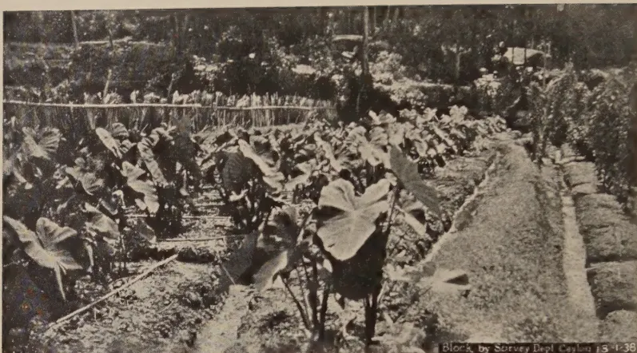
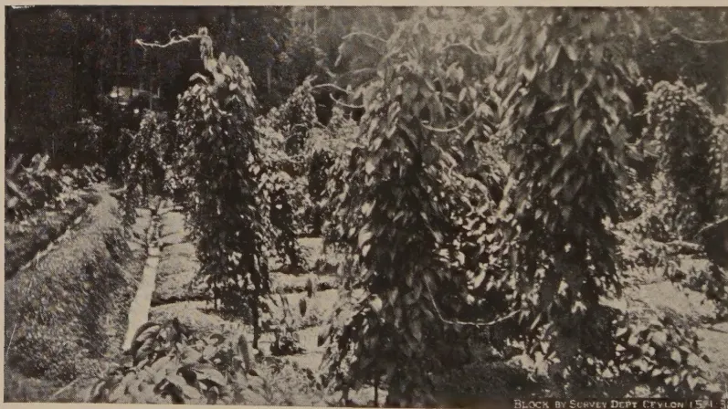
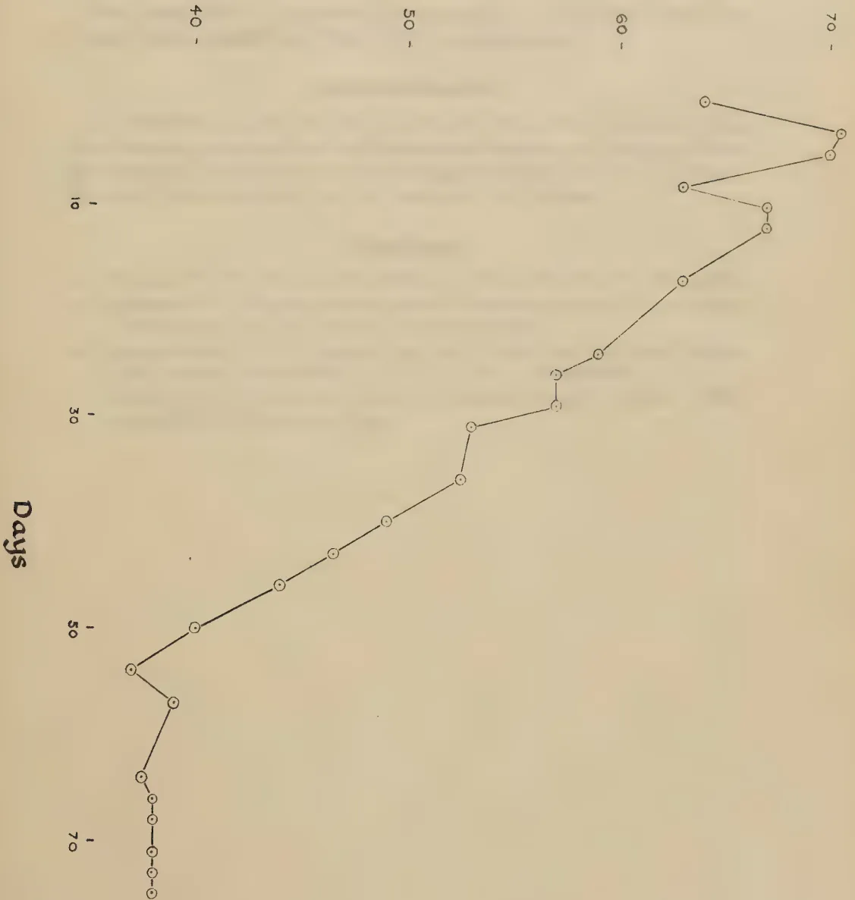
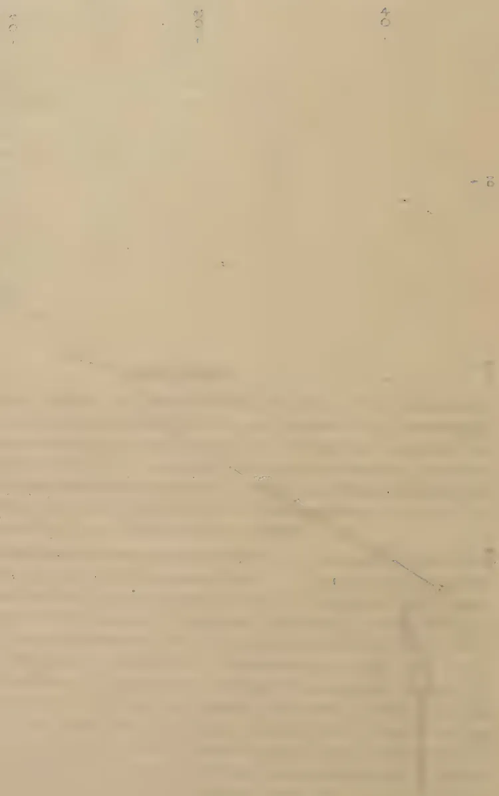

The
Tropical Agriculturist
VOL. XC
PERADENIYA, FEBRUARY, 1938
No. 2
| Page | |
|---|---|
| Editorial .. .. . | 69 |
| Yam Cultivation in the Kegalla District. By Duncan J. de Soyza, Dip. Agric. (Poona) .. .. . | 71 |
| Temperatures Lethal to the Green Muscardine Fungus, Metarrhizium anisopliae (Metch.) Sorok. By A. L. Johnpulle, B.Sc. (Lond.), F.R.E.S. | 80 |
| The Importance of Soil Conservation .. .. . | 84 |
| The Paris Green Treatment of Paddy Fields in Anti-Malarial Work .. .. | 88 |
| Soil Erosion : The Growth of the Desert in Africa and Elsewhere .. .. | 91 |
| Report of the Proceedings of the Inaugural Meeting of the Reconstituted Central Board of Agriculture .. .. . | 96 |
| Minutes of the Fortieth Meeting of the Board of Management of the Coconut Research Scheme (Ceylon) .. .. . | 114 |
| Minutes of a Meeting of the Board of the Tea Research Institute of Ceylon .. .. . | 118 |
| Meteorological Report for the Month ended January, 1938 .. .. | 123 |
| Animal Disease Return for the Month ended January, 1938 .. .. | 124 |
c—J. N. 940 (1/38)
All those who are interested in rubber will be glad to know that the Rubber Growers' Association has arranged for the reservation of an area of some 4,000 square feet for the erection of a Rubber Pavilion at the Empire Exhibition, Glasgow. The Rubber Pavilion will be located close to the Palace of Engineering and alongside one of the main avenues. On the Ground Floor it is proposed to stage an exhibit which will illustrate the story of rubber from the growth of the rubber tree to the actual applications of the product in various branches of industry, transport, and sport by means of working machinery and models, glass transparencies, coloured illustrations and specimens. Demonstrations will be given at periodic intervals on the production of rubber articles, which will be distributed at the Exhibition. Appropriate films dealing with the rubber industry will also be shown. In the gallery a series of rooms, including nursery, bathroom, and operating theatre, will be arranged for the display of various domestic and surgical uses of rubber.
The exhibits will be organized in collaboration with various manufacturers and associates connected with the rubber industry. The Rubber Pavilion will demonstrate the importance of rubber, not only to the British Empire, but as a vital factor in the development of industry throughout the world.
E. RODRIGO,
Editor,
The Tropical Agriculturist
February, 1938
FOR some time past we have felt that our Agricultural Research Officers are too insular: that they dissipate a considerable amount of energy and effort through their ignorance of the progress made by others engaged in similar work elsewhere. There can be no doubt that the same feeling is entertained by those who are responsible for the direction of investigational work in other small countries. A very apt illustration of this waste of effort is furnished by the work done on the life history of termites. The officer of our entomological division engaged in termite work discovered a method of breeding these insects in the insectary only after two years of intensive and sustained work. When at last he published his results he received many letters from entomologists in all parts of the world who had spent years in the pursuit of the same object. Each in his own laboratory had made the same mistakes and had experienced the same failures and disappointments over a number of years, whereas they might have benefited from each others' experiments had each of them known what the others were doing. It is not necessary to labour the point. One need not be a scientist to appreciate the truth of the commonplace observation that each worker can be assured of quicker results by interdependence than by independent labour.
We had begun to entertain the belief that the only remedy for this unsatisfactory state of isolation was travel and the facilities for the exchange of ideas and experience which travel afforded, when we received the Review of Agricultural Research and Investigation in the Colonial Empire with its companion and complement relating to Veterinary Research issued by the Colonial Advisory Council of Agriculture and Animal Health.
1—J. N. 940 (1/38)
70These contain complete summaries of the present position regarding the many problems in the solution of which the scientific workers of the agricultural departments of the colonial dependencies are engaged. In the preparation of these summaries thoroughness has been aimed at and therefore they include a large number of minor problems of purely local interest conditioned by the physical and social circumstances of each country. But there is an extensive range of more important subjects of common interest to all the dependencies whose agricultural activities can be measured by the common denominator which may be described by the comprehensive epithet "tropical". In other words, many scientists in tropical British territory are engaged in a search after solutions of the same problems.
While we are still convinced that personal contact affords the best means of pooling ideas and achievement in each stage of progress, the information contained in these publications enables the research worker to adopt the best substitute for personal contact. He knows what his fellow workers in other countries are doing and he can exchange information by correspondence. The value of these reviews in this respect to the scientific officer is beyond appraisement, so much so that it is a matter for some surprise that no one thought of issuing annual summaries of this kind earlier.
The compilation of the reviews may be regarded as only the first stage in the progress of the co-ordination of research. The next step which we commend to those who are in a position to take it is the establishment of a central clearing house of research. The Ceylon Department of Agriculture has recognized the importance of such an institution within the circumscribed field of its own activities by the creation of a Research and Experiments Committee which co-ordinates, directs, and controls all research work of the departmental staff. We eagerly await the translation of this idea to the larger field of the Colonial Empire.
71DUNCAN J. DE SOYZA, Dip. Agric. (Poona),
AGRICULTURAL INSTRUCTOR, KEGALLA
THE cultivation of edible roots in the Kegalla District and, in fact, throughout Ceylon, though practised for several centuries, has not been given much attention until recent years. Recently, however, crops hitherto unknown or totally neglected have been introduced or resuscitated in the villages.
The term 'Yam' as employed in this country is really a misnomer and is applied to mean any kind of stem or root tuber and has its equivalent in the Sinhalese word ala. This is further subdivided into vel ala and gas ala or gahala to mean the creeping and erect varieties respectively; true yams are really species of Dioscorea. With the campaign started in this district towards the end of 1934, for the greater production of food crops, emphasis was laid on the utilization of hitherto uncultivated high land in home gardens. In addition, in order to give an impetus to aquiculture which is deplorably ignored in this country, aquatic crops like Nymphaea stellata, S. manel, and Lasia spinosa, S. kohila, were introduced into or encouraged in the district. As a result of propaganda, the issue of free supplies of seed-yams and the organization of agricultural competitions for yam gardens, the yam production in the Kegalla District is now more than double the production of two years ago.
Manihot utilisima, S. manyokka.—Of the several kinds of roots grown in this part of the country, perhaps the best known and most widely cultivated is Manihot utilisima, the manioc or cassava of commerce. This crop is grown in all peasant settlements and chenas and is a useful source of food supply to the settlers who occupy areas which total more than one thousand acres. Being easily cultivated and drought resistant it is given pride of place in most small-holders' gardens and is also grown as a catch crop along with other seasonal plants in jak reafforestation areas and in young rubber and coconut
72plantations. Several varieties of manioc are grown in this district, characterized by their age of maturing, which varies from four to eighteen months, the colour of stems and tubers, the foliage, the character of stems and branching. The variety known as rata manyokka takes about 10 to 12 months to mature and yields the largest yams; kaha manyokka possesses a bright yellow fecula, while nika manyokka which takes nearly 18 months to mature is slightly bitter. A 4 to 6 months' variety known as sinyokka is somewhat sweet and is relished by many. Local names are very misleading, one variety often having different names in different localities. The following local names are used in differentiating the cultivated varieties, neti ratu, american, kiribadu, alu, kapiri, puttalam, and eda manyokka. An average yield of 4 to 8 tons per acre can be obtained, according to the variety grown, while there have been instances of yields of 10 to 12 tons per acre in virgin soil, where individual stools bearing up to 30 lb. or more are not uncommon.
Ipomoea batatas, S. batala.—The sweet potato may be reckoned as next in importance. Unlike the erect growing manioc, this being a creeping or trailing perennial is usually cultivated, especially in home gardens, in well-prepared, raised beds. Although it thrives best in light soils, it has been found to grow in any situation and has been much encouraged on hill-side peasant settlements, as a dual purpose crop, in that it yields excellent tubers for consumption in 4 to 12 months, depending on the variety grown, and at the same time serves as a good ground cover, temporarily binding the soil against erosive agents.
The following three distinct forms are found in this area, although new and intermediate varieties appear as sports among the existing varieties:—
Some imported varieties as Porto Rico, Red Bourbon, Jersey and Gandia, introduced to the district in the year 1932 through the Kegalla Experiment Station are also found in the villages. The varieties Ashburn, Quacker, Wannop, and White Maltese are under trial in the Wagolla Farm School.
In extent of cultivation and usage, the sweet potato is second only to manioc and gives very high returns. The keeping qualities are better than those of manioc, though bruising and damage to tubers during lifting should be carefully avoided to prevent wastage by desiccation and fungus rots. Although tubers keep well when allowed to remain underground without harvesting, this must be avoided as much as possible, as loss
This image shows a blank, aged page with a light beige or cream color. The surface has a subtle texture and some minor blemishes or discolorations, particularly a faint vertical line or smudge near the top left. There is no text or other content on the page.
PLATE I.—A HIGH LAND PADDY FIELD CONVERTED INTO A YAM GARDEN OF AROIDS.

PLATE II.—A SECTION OF THE SAME FIELD UNDER DIOSCOREA YAMS.
73of crop usually follows owing to the attack of the sweet potato weevil, Cylas formicarius, which riddles the tubers and makes them unsalable and unfit for human consumption. Field rats are also a common pest of this crop.
Aroids.—A yam crop survey of the district has indicated that edible aroids form a common source of food, a few of these plants being found in nearly all home gardens. These herbaceous, tuberous perennials possess large handsome leaves. Three distinct genera are found naturally occurring in this part of the country, especially along streams, namely, Alocasia (Xanthosoma) indica, with sagittate or hastate leaves, Colocasia antiquorum, with peltate leaves and Amorphophallus campanulatus, with mottled pinnatisect leaves and leaf stalks.
Several varieties of cultivated species of alocasias and colocasias are grown in home gardens and peasant settlements for the sake of their edible root-stocks or corms, some of which are very palatable. The alocasias are rather large in size and possess a condensed stem, while the colocasias are dwarfs in habit and produce corms grouped together round the mother corm. Amorphophallus develops an enormous corm when allowed to remain in the ground for about three years. The cultivated varieties never flower and are considered to be among the oldest cultivated crops in the world, being depicted in Egyptian paintings. Though only a few varieties are cultivated in Ceylon, it is recorded that over 200 varieties have been recognized in Hawaii, where they are extensively grown. These yams are called after various names in different countries, as Coco-yam, Eddo, Dasheen, Taro, and Tannias. In this district, the following vernacular names are given according to the variety, the plant being distinguished by colour, shape of leaves, and habit of growth :—
Desai ala, kiri ala, and sudu kandala—leaves and stalks pale green or ash green.
Gahala, kalu kandala, and yakutala—leaves and stalks dark or purplish green.
Grandi kandala and polon hubarala—leaf stalks mottled.
Dehi ala, sevel ala, and rata kandala—leaves and stalk green.
Tummas ala—leaves and stalk purplish green.
The desai ala is the most commonly cultivated in this area, while kalu kandala, sudu kandala, and kiri ala come next; sevel ala, dehi ala, tummas ala, and rata kandala are of recent introduction and are rapidly gaining ground. Some of these
74varieties, desai ala, for instance, find a ready market, a pound of yams fetching 4 to 6 cents as compared with manioc or sweet potato tubers which only realize 1 to cents per pound. The failure of other varieties as a marketable commodity is probably due to the fact that many town residents cannot differentiate between the edible and the non-edible varieties and hence are reluctant to buy them.
These crops are best suited to lowlying areas, doing well near swamps and streams which are flooded occasionally. The short-aged varieties as tummas ala can be grown with success under light rainfall conditions. Propagation is by planting small corms or slices (chunks) of condensed stem, containing two or three buds or by planting the growing points of plants with a few inches of stem, with the leaves peeled off, leaving only the rolled-up tender leaves. The spacing is generally 2 feet to 4 feet apart, according to variety. Under favourable conditions a yield of 3 to 5 tons can be obtained. With good cultivation, a hill may yield 4 to 6 lb., while it is not uncommon to find a hill of desai ala yielding up to 15 lb. of corms. Very large yields are obtained from desai ala, when planted in pits or drains half-filled with old coconut husks. In harvesting, either the whole crop is lifted or a method known as "castration" is employed by the villagers (this is also done with manioc), which consists in removing a part of the corms by means of a pick or by hand, later closing up the exposed area. By this method a constant supply of yams can be obtained.
The general success of aroid yams is due to the following reasons :—
Most plants belonging to the aroid group possess acrid properties in the cell sap which are present even in the edible corms and can be removed by boiling and decanting off the liquid. It has been observed that some alocasias when grown
75side by side with coconut seedlings in the same pit keep off white ants that do considerable damage to these plants; it is possible that the root secretions of these plants, being acrid, act as a deterrent against these insects. It is also believed that these plants keep the soil moist and cool, thus helping the seedling coconuts in times of dry weather. The freedom of this group of plants from pests and diseases may be attributable to this irritable cell sap.
Dioscoreas or true Yams.—All dioscoreas are herbaceous perennials having a climbing or twining habit and are characterized by the production of tuberous root-stocks of a starchy and sometimes acrid nature. The aerial stems die down annually, leaving the underground parts in dormancy for a period, before producing new growth for the next season. In this country all dioscoreas are collectively called vel ala owing to their climbing habit. Both cultivated and wild species of this plant are found in this district, the cultivated varieties being marked by three distinct morphological characters, viz. :—
Although the term 'vel ala' is applied to all dioscoreas yet each variety has its own vernacular name, thus distinguishing one from the other. Dioscoreas are but little known in Ceylon except in the North and some parts of the Wet Zone. In the North several varieties of outstanding merit are cultivated but, until recently, they were rarely cultivated in this part of Ceylon, partly through ignorance of their food value and partly because their period for growth is longer than that of the more commonly cultivated root crops like manioc, sweet potatoes, or aroids. Another explanation for the limited cultivation of dioscoreas may be that more thorough preparation of the land and more extensive cultivation operations, such as staking, draining, &c., are required than with other roots. The most commonly cultivated varieties used to be kukul ala, angilly ala, hingur ala, vel ala, and kahata ala but several new varieties of outstanding merit have come into prominence within the last few years, e.g., japana ala or ratu ala, kiri kondol, raja ala, rata kondol, katu kukul ala and Kaha ala or Kaha japana ala.
The following dioscoreas are cultivated in this district, to a greater or lesser extent, all being varietal forms of Dioscorea alata :—
Angilly ala, named so owing to the digitate form of tubers.
Binnara ala. (Binnara=September).—This yam is considered to be ready for lifting in the month of September.
Hingur ala.—Yams resemble sets of ginger, and are of good quality.
Japana ala or ratu ala.—This variety has been introduced from Jaffna ; yams reddish in colour ; bearing aerial tubers with a rough brown skin and red fecula.
Kahata ala.—This is so called as the cut surface of the yam turns brown on exposure.
Kiri kondol.—The yam is milky white and is of good quality.
Kiri vel ala.—Yam milky white ; bearing aerial tubers with creamy white flesh.
Rata kondol.—Resembles angilly ala, skin deep purple, but flesh whitish.
Raja ala.—This yam has a deep purple skin and pale purple flesh.
Rata vel ala.—The outer skin of this yam is bright crimson, while the flesh is granular white.
Vel ala.—This is similar to Kahata ala, but the flesh is white.
The following other dioscoreas are found in Kegalla District :—
D. bulbifera S. udala.—This produces potato-like aerial tubers in profusion. The yams are classed as second-rate quality.
Dioscorea sp. S. java ala or nattala.—Flesh creamy white.
D. esculenta var. fasciculata. S. katu kukul ala.—Similar to kukul ala but the stems are more prickly and the yams larger.
D. esculenta S. kukul ala.—Cooked yams closely resemble potatoes in flavour and mealiness.
D. aculeata S. kaha ala or kaha japana ala.—Skin and flesh of yellowish colour and of very good quality.
The following edible varieties are found growing wild in the jungles and during the lifting season (September to December) villagers scour the jungles in search of these yam :—
D. pentaphylla. S. katu ala.—Stems are very prickly and yams deep seated and covered with hairy rootlets.
D. spicata. S. gona ala.—Yams more or less flattened and ramified like the antlers of a stag, hence the name. The writer has seen specimens over 6 feet in length. This is freely used by the villagers.
D. obtusata. S. hiritala.—Yams not deep seated but found in clusters like kukul ala, white and prolific.
D. oppositifolia S. jamburala (or jambuala).—As the name indicates the yams are very deeply seated.
77Three more indigenous varieties are found but they are seldom eaten, namely :—
D. tomentosa S. uyala.
D. intermedia.
D. sativa S. panu kondol.
Dioscoreas thrive best in deep humus or alluvial soil as good drainage and depth of soil are essential in order to make room for the development of yams. Soils poor in humus should be charged with well-decayed organic manures, like cattle dung or compost. Many cultivators grow them to advantage along fences or by training the vines to trees, pillars or trellises ; the tops of bamboos form good supports for yams. The planting season is from January to March and the crop is ready by December to February. Dioscoreas flower freely, producing tiny blossoms in pendulous racemes, but seldom set seed and propagation is invariably done by pieces bearing two or three buds, cut off from the yams, the best material being found nearer the stem end. The aerial tubers found in some species are also used for propagation purposes. Planting is usually done in pits or trenches spaced 2 to 4 feet apart. Varieties like kukul ala and angilly ala which produce clusters of yams near the surface of the soil, may be cultivated in raised beds. It is a good practice to cover the beds with straw or dry leaves which will not only keep down the weeds in the early stages of the crop, but will act as a mulch, retaining the moisture and keeping the soil cool.
Yields vary considerably, according to the variety grown, ranging from kukul ala, which yields about 6 to 8 lb. per vine to kahata ala, yielding single yams weighing over 80 lb. An average of 6 to 8 tons of yams per acre is usual, selling at 3 to 4 cents per lb. The crop is ready for harvesting in 10 to 11 months. Lifting should only be done when the yams are thoroughly mature, which will be indicated by the general dying back of the vines.
Yams, when stored in a cool place or buried in dry sand under cover, keep fresh for a considerable period. They are a wholesome and nutritious article of food, very rich in stored starch and may be eaten roasted, baked, boiled, steamed, fried, prepared into porridge and puddings or cooked as curries. They are largely cultivated and freely used by all classes in the West Indies and South America.
The following crops are not extensively cultivated, but small beds are found near homes, in peasant settlements and round
78estate labourers' lines. The rhizomes or underground tubers are used as vegetables or serve as a substitute for other yams.
Canna edulis S. buth surana.—The purple arrowroot or Queensland arrowroot is not unlike the ornamental species of canna having large bronzy leaves and red flowers. In planting, sections of rhizomes are placed 2 to 3 feet apart and 2 to 3 inches deep in well-prepared, raised beds. The crop takes 6 to 8 months to mature.
Maranta arundinacea S. araluk or hulan kiriya.—This crop thrives best in sandy loams, planted 2 feet by 2 feet. The rhizomes are creamy white in colour and are used either as vegetable, boiled in place of yams or by grating, washing, and drying to prepare a flour which is a crude form of the arrowroot of commerce.
Coleus parviflorus S. innala or ratala.—This has aromatic leaves and produces an abundance of small tubers. It is more commonly cultivated in the moist low country but is now rapidly gaining ground in this district. It gives very good yields in sandy soils and the tubers, which are widely used in curries, find a ready market. The tubers keep very well and are cultivated in raised beds by means of small stem cuttings or tubers.
Nymphaea stellata S. manel.—The cultivation of this useful aquatic herb was recently introduced to several villages. It is a crop of great food value and medicinal use and is systematically cultivated by some villagers in paddy fields.
Helianthus tuberosus S. ala suriya kantha.—The Jerusalem artichoke has been recently introduced to some villages especially through schools. Very good yields have been obtained from crops grown in sandy loams. Planting is done by tubers placed about 2 feet apart, the crop maturing in 3 to 4 months. The tubers are a very good substitute for potatoes and can be used to advantage by diabetic patients being rich in inulin and poor in starch. The tubers are sold locally in the market at 12 to 15 cents per lb.
Yams give best results where the soil is loose and friable, easily yielding to the growth of the underground tubers. They can therefore be successfully cultivated on contour earth bunds or on the edges of platform terraces made to prevent soil erosion in newly opened land or on permanent cultivations. Alocasias, colocasias, and dioscoreas are now commonly cultivated in this way in peasant settlements in Kegalla District and every effort is being made to make this practice to go hand in hand with the adoption of soil conservation methods in small-holdings.
79Very few pests and diseases are known to attack yam crops to an extent that would discourage their cultivation. Once in a way a yam garden may suffer much damage by vermin or by the onslaught of a fungus disease. The most common pest of all yams are burrowing rodents that do considerable harm to such crops as sweet potato, cassava, and artichoke. Leaf diseases in the form of rusts commonly appear among the Dioscorea species, but the loss sustained by the crop is negligible. This year, however, there was considerable loss of crop among alocasias grown in the Paranakuru korale due to disease caused by Sclerotium rolfsii.
Taking into consideration the seasonal changes, the varieties of yams commonly cultivated, or which could be profitably cultivated in this district, a suitable planting calendar is suggested in this article. From this it is evident that a fair variety of yams could be grown in every home garden, ready for lifting throughout the year. Systematic cultivation of these crops in all home gardens would undoubtedly be a potential source of food within the reach of every villager.
| Name of crop | Planting season | Time taken | Length of time | Season for lift |
|---|---|---|---|---|
| to mature Months |
yam remains good before lifting Months |
|||
| Katu ala | .. Found wild in jungles .. | 10-12 | .. 2 .. | Jan.-Feb. |
| Gona ala | .. do. .. | do. | .. do. .. | do. |
| Hiritala | .. do. .. | do. | .. do. .. | do. |
| Jamburala | .. do. .. | do. | .. do. .. | do. |
| Ratu ala | .. Jan.-Mar. .. | 10-11 | .. 3-4 .. | Dec.-Feb. |
| Kahata ala | .. do. .. | do. | .. do. .. | do. |
| Java ala | .. do. .. | do. | .. do. .. | do. |
| Kukul ala | .. do. .. | do. | .. do. .. | do. |
| Angilly ala | .. do. .. | do. | .. do. .. | do. |
| Kiri vel ala and other dioscoreas | .. do. .. | do. | .. do. .. | do. |
| Desai ala | .. { Feb.-Mar. July-Aug. } .. |
6 | .. 3 .. | Dec.-Jan. |
| Kiri habarala | .. Feb.-Mar. .. | 9 | .. 3 .. | Oct.-Nov. |
| Tummas ala | .. | } Rainy season .. 3-4 | .. 2 .. | After 3-4 months |
| Rata kandala | .. | |||
| Dehi ala, and | .. | |||
| Sevel ala | .. | |||
| Other kandala varieties | .. July, August .. | 6 | .. 3 .. | Dec.-Jan. |
| Innala or ratala | .. do. .. | 6 | .. 2 .. | do. |
| Manioc var. | .. Rainy season .. | 4-18 | .. 3 .. | — |
| Sweet potato var. | .. do. .. | 4-10 | .. — .. | — |
| Arrowroot var. | .. May .. | 6-8 | .. 2 .. | Oct.-Nov. |
| Jerusalem Artichoke | .. Rainy season .. | 3-4 | .. 2 .. | — |
| Manel | .. Feb.-Mar. .. | 4-5 | .. 2-3 .. | May-June |
Ent. M.L.
A. L. JOHNPULE, B.Sc. (Lond.), F.R.E.S.
GRADUATE INSTRUCTOR-PROBATIONER.
THE fact that a compost pit provides an ideal breeding ground for the larvae of the coconut beetle, Oryctes rhinoceros L., constitutes a serious objection to laying compost pits on coconut land. The possibility of controlling the larvae in these pits by the use of the entomogenous fungus Metarrhizium anisopliae (Metch.) Sorok., has been frequently suggested. As temperatures as high as 70°C. are of common occurrence in compost heaps and as there is the likelihood of these temperatures being lethal to both the mycelium and the spores of the fungus, information regarding the temperature relations of this fungus is an essential preliminary to attempts at biological control of rhinoceros beetle larvae. The investigation recorded below represents an attempt at securing this information.
The experimental material consisted of a strain of M. anisopliae isolated by Mr. L. S. Bertus from diseased rhinoceros beetle larvae. Stock cultures of the fungus were maintained in Erlenmeyer flasks on boiled rice, a medium on which Metarrhizium sporulates freely. In one series of experiments single spore cultures were used, and single hyphal tip cultures in another. Single spore isolations were made by the method of Rawlins (1933) and single hyphal tip cultures by Brown's method (1924).
The technique of determining lethal temperatures consisted in performing viability tests in Van Tieghem cells on spores subjected to various heat treatments. Preliminary experiments on the suitability of various concentrations of glucose (0.2 per cent. - 0.025 per cent.) and of dung extract for spore germination were carried out. Germination in glucose solutions was
81poor. A comparatively high percentage germination was obtained with dung extract prepared by steaming 200 gms. dried cow dung for one hour, filtering through cotton wool and making up to a litre with distilled water. The extract was autoclaved at 20 lb. pressure for twenty minutes. Germination in 75 per cent., 50 per cent., and 25 per cent. dung extract was poorer than in the 100 per cent. solution.
Spore suspensions were made by dispersing 5 loopfuls of spores in 10 cc. of sterile 100 per cent. dung extract in a test tube. A thermometer was inserted in the test tube which was maintained at the requisite temperature in a thermostat. The variation in temperature was . The following temperatures were investigated: ., ., ., ., and . The following were the durations of exposure to the various temperatures: 0 min., 5 min., 15 min., 30 min., 1 hour, 2 hours, 3 hours, 24 hours, and 48 hours. Hanging drop cultures of spores subjected to the above-mentioned treatments were made by inverting a coverslip carrying a loopful of the treated spore suspension over a Van Tieghem cell. A drop of sterile dung extract was placed on the floor of the cell in order to maintain high air humidity within the cell and to reduce evaporation from the surface of the hanging drop. Soft paraffin wax was used for sealing joints in the cell.
Hanging drop cultures were carried out in triplicate for each treatment.
Daily examinations of the hanging drops were made under the microscope up to usually the third day and occasionally the fifth day.
The results of the experiments are given in table I. Germination is recorded as being present (+) or absent (—). In some cases records have been made of percentage germination.
TABLE I.—Killing of Metarrhizium Spores by Heat
| Temp. | Duration of exposure | Germination at end of | ||||
|---|---|---|---|---|---|---|
| 1st day Per cent. |
2nd day Per cent. |
3rd day Per cent. |
4th day | 5th day | ||
| 42°C. .. | 0 min. .. | 2.0 | 2.1 | + | + | + |
| 5 „ .. | — | 1.4 | + | + | + | |
| 15 „ .. | — | 1.8 | + | + | + | |
| 30 „ .. | — | 1.7 | + | + | + | |
| 60 „ .. | — | + | + | + | + | |
| 24 hours .. | — | — | + | + | + | |
| 48 „ .. | — | — | — | — | + | |
| 48°C. .. | 0 min. .. | 1.6 | 2.2 | + | .. | .. |
| 5 „ .. | — | — | + | .. | .. | |
| 15 „ .. | — | — | + | .. | .. | |
| 30 „ .. | — | — | + | .. | .. | |
| 60 „ .. | — | — | + | .. | .. | |
| Temp. | Duration of exposure | Germination at end of | ||||
|---|---|---|---|---|---|---|
| 1st day Per cent. |
2nd day Per cent. |
3rd day Per cent. |
4th day | 5th day | ||
| 50°C. | 0 min. | 3.9 | 4.1 | + | .. | .. |
| 5 " | — | 1.0 | .. | .. | .. | |
| 15 " | — | 0.7 | .. | .. | .. | |
| 30 " | — | — | — | .. | .. | |
| 60 " | — | — | — | .. | .. | |
| 2 hours | — | — | — | .. | .. | |
| 3 " | — | — | — | .. | .. | |
| 30 " | — | — | — | .. | .. | |
| 55°C. | 0 min. | 1.2 | 1.8 | 2.2 | .. | .. |
| 5 " | — | — | — | .. | .. | |
| 15 " | — | — | — | .. | .. | |
| 30 " | — | — | — | .. | .. | |
| 60 " | — | — | — | .. | .. | |
| 60°C. | 0 min. | 1.5 | 4.4 | — | .. | .. |
| 5 " | — | — | — | .. | .. | |
| 15 " | — | — | — | .. | .. | |
| 30 " | — | — | — | .. | .. | |
| 60 " | — | — | — | .. | .. | |
The results exhibit a considerable degree of uniformity. Exposures to temperatures of 50°C. and above for 5 minutes inhibited germination in every case. The spores appear to have a comparatively low thermal death point and it is only when the temperature falls below 48°C. that conditions favourable for spore germination are obtained. A temperature of 42°C. is definitely non-lethal to Metarrhizium spores.
Fig. 1 illustrates the temperature drift in a compost pit of the type generally laid down in coconut land. A temperature in the neighbourhood of 70°C. is soon reached and is maintained at that level for nearly two weeks. A gradual decline in temperature follows, but the temperature does not fall well below 48°C. till the pits are nearly six weeks old. Inoculation of the pits may then be undertaken. The susceptible larval and pupal stages of the beetle cover a period of nearly eighteen weeks. The inoculation of six-week old pits gives the fungus at least twelve weeks within which to effect destruction of the larvae or the pupae. As killing of the larvae by the fungus is effected under laboratory conditions in a much shorter time, successful control in compost pits appears possible.
Temperatures lethal to spores of Metarrhizium anisopliae have been studied with a view to testing the possibility of biological control of the coconut beetle in compost pits.
[Faint page: no legible print of its own could be verified; text withheld (stage 4 review list)]

[Faint page: no legible print of its own could be verified; text withheld (stage 4 review list)]

83The thermal death point of the spore has been shown to be well below the temperatures normally occurring in compost pits during the first six weeks.
The possibility of successful inoculation of the pits after the temperature has fallen below 48°C. is suggested.
The writer's thanks are due to Mr. M. Park, Plant Pathologist, at whose suggestion the work was undertaken and under whose direction it was carried out and he is indebted to Mr. H. F. Carter, Medical Entomologist, for the compost pit figures.
W. C. LESTER-SMITH, B.A., Dip. Rur. Econ. (Oxon.),
A.I.C.T.A. (Trinidad),
AGRICULTURAL OFFICER, SOIL CONSERVATION
THE soil is the material in which agricultural crops take root and from which they obtain the bulk of their food. With the exception of the carbon they take from the air which they breathe, plants obtain all their other food requirements in solution, through their roots, from the soil and from the rain and other water which the soil absorbs and retains. The soil, therefore, is the main source of plant food and without it crop production becomes impossible.
Different soils differ very considerably in their power of crop production, and this variation is generally referred to as difference in soil fertility. This term soil fertility, however, while it may commonly be used as a measure of the value of a soil in terms of its productive ability, does not enable fine degrees of difference in fertility to be distinguished. Thus one may refer to a particular soil as being very fertile, fertile, fairly fertile or infertile, but these terms neither express the degree of nor explain the reasons for these differences, nor do they readily permit the defining of intermediate degrees of fertility. The chief reason for this is that the term soil fertility is not a measure of the level of any one particular factor concerning a soil, but is really an expression of the crop productive capacity of a soil resulting from the interaction of a number of different factors. Some of the important factors which contribute to the degree of fertility of any soil, or, as it may be expressed, to the measure of the productive capacity of a soil, are its texture, its moisture and organic matter contents, the quantity of available plant food it contains, and the number and type of micro-organisms which inhabit it. These, in the main, are the chief factors the interaction of which determines the level of efficiency in crop production that any particular soil attains. All these different factors by no means remain static or stationary, they change under the influence of changes in environmental conditions, such as variations of climate, vegetative covering, cultivation, drainage, &c.; and even under natural and undisturbed
* The text of an address given during an Agricultural Propaganda Week-end held at Balangoda, December 11, 1937
85conditions the degree of fertility attained by soils is extremely variable. Under natural conditions over a long period of years, when the soil is protected by a sufficient covering of vegetation, comprising tall trees, lower growing shrubs and small plants growing close to the ground, a balance of soil fertility becomes established. In such cases, unless interfered with by man or his domestic animals, there is no permanent removal of plant food and the other factors which contribute their quota to the fertility of the soil remain more or less constant. The plant roots of the existing natural vegetation take up plant foods from the soil, but these are continually being returned to the soil surface by falling leaves and other plant remains, which, after decomposition, return to the soil and again become available as plant food. In this way the natural vegetation, after a time, provides its own food requirements in a cyclic process of growth, death, and decay, and a state of equilibrium thus becomes established.
When natural conditions are altered so as to make way for the artificial conditions of crop production the fertility of a soil is immediately affected. Agriculture essentially comprises the growing of certain plants in large communities, usually of a single type, the whole or some part of which is eventually removed in the form of a crop or plant product of vegetable or animal nature. In this way large quantities of plant food are continually being removed from the soil, changing its natural balance or equilibrium and rapidly lowering its degree of fertility. However high the level of this fertility may have been, it is only a matter of time before it is exhausted; for the fertility of a soil is maintained only until such time as the reserves of plant food it contains are used up, and this, under tropical conditions, is not long. Unless a certain level of soil fertility is built up and maintained agricultural production becomes less and less remunerative until a stage is reached when the costs of production exceed the value of the crop produced and economic failure results. The ordinary village cultivator has not the capital to tide him over such a period of crisis and he then becomes dependent upon chena (shifting) cultivation to save himself and his family from starvation. If the Ceylon villager is to become independent he must first learn to conserve his soil.
The destruction of the natural vegetative covering of the soil is an unavoidable accompaniment of any form of change-over, not only from natural conditions to the artificial conditions of cultivation, but also in changes from one crop to another, whether permanent or short-aged. It results in a definite reduction in the degree of soil fertility, and this process is a cumulative one which increases considerably with the passage of time if insufficient measures are taken to prevent it.
86The removal of the protection to the soil provided either by the natural vegetation or by the crop itself, at once exposes the soil to the tropical sun and to rain. The former has far-reaching effects upon the fertility of the soil ; its temperature is raised, the rate of oxidation and the decomposition of organic matter is accelerated with adverse effects upon the beneficial micro-organisms which make the soil their home. Soil texture and tilth are detrimentally affected and soil erosion caused by drying and wind can take place : fertility is immediately reduced. The effects of rainwater then come into play, the previous processes contributing largely towards accentuating these effects. The rainwater causes losses of the best soil and of plant food by erosion, and further changes and losses of plant food through leaching, there being important differences between the physical and the chemical action of water upon soils. Erosion is entirely a physical action, the fine soil particles being removed in suspension in the water : leaching is more a chemical action, the materials being removed by the water in solution : by both processes the fertility of the soil is still further reduced.
Moving water is the main cause of soil erosion. When rain falls on the land surface a proportion of it strikes any vegetation that may exist where it falls and some of it is retained on the vegetation, the amount being more or less proportional to the volume of the vegetation. Under thick jungle conditions very little of the rainwater from a heavy shower may actually reach the soil, the greater part being absorbed by the dense vegetation. Under agricultural and other conditions a greater proportion of the rain reaches the soil and a further portion of it is absorbed by the soil. The remainder of this water moves or flows away, in the manner characteristic of all liquids, by the easiest route to the lowest point where it is supported both below and on all sides.
It is this flowing away or movement of run-off water on the surface of the soil which is the main cause of soil erosion in Ceylon. Flowing water possesses the power of carrying with it a greater or lesser amount of solid matter gathered from the surface over which it flows. The gradual and continuous or rapid and intermittent removal of soil in this way, insignificant though it may sometimes appear, is one of the most powerful forces in reducing the productive capacity of agricultural land, and especially land with any appreciable degree of slope. Water which percolates through the soil may dissolve and take with it valuable plant nutrients, but these can be replaced by the application to the soil of the necessary fertilizers. The solid soil particles removed by surface run-off water, however, cannot be replaced except by transported soil, since the formation of soils formed in situ is an extremely slow process and does not take place sufficiently rapidly to be of any practical value. As
87a result of soil erosion, therefore, productive land can be rapidly reduced to a state in which it is not only infertile but incapable of cultivation. Usually, long before this stage is reached crop production has become uneconomic and, therefore, unprofitable.
The raising of the level of fertility of a soil, if economic results are to be obtained from its utilization for agricultural purposes, is a process that must be commenced from the very beginning and carried on throughout all time if the fertility of the soil is to be raised to and maintained at a profitable level of production. This can only be done by the adoption of intensive methods of agriculture; crop production and plant and live-stock utilization must go hand in hand if the best results are to be obtained. The raising and maintaining of the fertility of the soil is the basis of the production of remunerative, healthy, and economic crops and live-stock. It is primarily dependent upon the conservation of the soil and the prevention of soil erosion.
Soil erosion caused by rainwater is due mainly to the movement or flow of run-off water over the surface of the soil. The more rapidly this water moves the greater its erosive power, the greater the total quantity of soil and the larger the size of the individual soil particles which it can remove. In addition, the larger the volume of moving water and the steeper the slope down which it moves, the greater is its velocity.
The prevention of soil erosion is, therefore, based mainly on reducing the volume of run-off water to a minimum and controlling or checking its rate of flow. The former is primarily accomplished by retaining on the land, as near as possible to where it falls, the maximum amount of rainwater suited to the crop being grown, by increasing the density of the vegetative cover and the moisture retaining capacity of the soil to its maximum and by constructing the necessary catch-pits, contour trenches, or lock and spill drains to hold up the run-off water. Controlling or checking the rate of flow of the surface run-off water, is accomplished mainly by having efficient barriers or checks to the progress of this water in suitable places and at sufficiently frequent intervals to reduce its rate of flow to a minimum and to cause it to deposit all the soil it carries in suspension. The various methods of effecting both of these main aims for the prevention of soil erosion require more detailed explanation than can be given in one lecture. The point of chief importance in this preliminary discourse is to stress the great necessity for every possible means to be taken to conserve the soil. The soil may be regarded as the bank from which the agriculturist obtains his capital, its fertility as the interest he obtains from his labour and the wise expenditure of that capital; without this bank he cannot exist, therefore he must guard it and protect it from loss.
88W. R. C. PAUL, M.A., M.Sc., D.I.C., F.L.S.,
AGRICULTURAL OFFICER, NORTHERN DIVISION
AND
W. A. GOMES, D.T.M. & H. (Eng.), D.P.H. (Edin.),
MEDICAL OFFICER OF HEALTH, ANURADHAPURA
THE dusting of paddy fields with Paris Green for the destruction of anopheline larvae found present whenever there is a sufficient supply of water in the fields for the breeding of the malarial mosquito is regarded as an important control measure in anti-malarial work. Complaints have, however, been periodically received from paddy cultivators to the effect that their crop has been damaged, particularly when it is in ear, by the application of Paris Green powder at the strength used in anti-malarial work. Specimens of plants as cases of alleged damage caused by Paris Green were examined in January, 1936, by the Entomologist of the Department of Agriculture and reported to be attacked by stem borer (Schoenobius bipunctifer) and paddy leaf roller (Marasmia bilinealis). In view, however, of the widespread opinions expressed by paddy cultivators that their crops are damaged by dusting the fields with Paris Green, it was decided to lay down a trial at the Anuradhapura Experiment Station to examine the effect of Paris Green powder on paddy at a strength of 2 per cent. by weight suspended in soap-stone powder in which proportion it is used in anti-malarial work. In the first instance, it was considered unnecessary to lay out any precise scientific experiment so as to obtain results which are capable of modern statistical analysis and, therefore, the experiment reported in this paper was undertaken for the first purpose of making gross observations on the crop at different stages of its growth.
A four-acre block situated in the paddy area of the Experiment Station, Anuradhapura, was selected for this experiment and divided into three plots running from west to east. In
89the first plot of 2 acres on the western side, the Paris Green treatment was carried out while next to it was a guard plot of one acre and then came the control or untreated area, also of one acre. The guard plot was used for the purpose of catching any of the powder which might be blown across by the south-west wind during the dusting operations in the treated area and thus preventing any of the powder falling on the control plot.
The whole block was subject to the usual cultural operations undertaken at the Station for sowing the yala paddy crop. It was manured with Nicifos 17/41 at the rate of one cwt. per acre and pure line pachchaiperumal was sown on April 30, 1937. In order to determine the efficacy of Paris Green, dipping tests for anopheline larvae were carried out in the fields during the season, by examination of samples of water in the treated and control plots at intervals of 4 days after dusting. Prior to the commencement of dusting, both plots gave positive results. Subsequently, the treated plot consistently proved negative while the control plot presented a large yield of anopheline larvae for the same number of dips.
Dusting was done when the paddy was about three weeks old. The mixture was blown in the form of a fine powder over the fields, the operation being carried out by trained labourers using the 'Italian Sprayer', a hand-dusting type. The dusting was done by the operator moving in the direction of the wind, so that a cloud of the powder floated evenly over the field. It finally settled as a film over the surface of the water of the fields but a close examination revealed no adverse effect on the standing crop.
The first application was made on May 21, 1937, and the mixture was used at the rate of 16 lb. per acre. Dipping tests for larvae carried out on May 25 gave positive results in both the treated and untreated plots although only first stage larvae were found in the treated plot. At this stage, an outbreak of swarming caterpillar (Spodoptera mauritia) became so severe that it was decided to cut off the irrigation supply on May 25 as a measure of control and six days later, when the attack was greatly reduced, the irrigation was resumed.
The second dusting with Paris Green was done on June 4 with the rate of application increased to lb. per acre. On June 7, dipping tests showed the presence of larvae in the control area but in the treated area the results were negative.
The third dusting was done at 20 lb. per acre as it was found that this rate appeared to give a high degree of larval control and, thereafter, weekly dustings were carried out at this rate. Dipping tests were taken at weekly intervals until July 26,
90after which there was no water present in the fields, the irrigation supply being closed on July 23. The crop was then allowed to ripen and no further dusting was considered necessary.
On July 3, the crop showed 50 per cent. flowering and harvesting took place between August 2 and 6. At no time during the whole period of the growth of the crop was there any adverse effect of Paris Green observed on the plants. The yields are recorded below :—
| Plot | Acreage | Yield per Acre | |||
|---|---|---|---|---|---|
| Bush. | Meas. | ||||
| Treated | .. | 2 | .. | 38 | 13½ |
| Guard | .. | 1 | .. | 33 | 67 |
| Control | .. | 1 | .. | 39 | 27 |
The average yield per acre obtained over an extent of 20 acres cultivated for the yala season at the Experiment Station for multiplication of pure line pachchaiperumal paddy was 36 bushels.
It is reasonable, therefore, to infer that the Paris Green had no appreciable effect in reducing the yield of paddy in view of the fact that the yield from the guard plot which had obviously received much less Paris Green than the treated plot was lower than that of the treated and control plots, and also because the treated plot gave a slightly higher yield than the average obtained on the Station from the multiplication area of 20 acres which was cultivated under similar conditions as the plots in this experiment.
It is, however, advisable to confirm this result by carrying out a precise experiment so that the results may be statistically interpreted.
91IT is a commonplace of geology that the surface of the earth is constantly in motion ; that our mountain ranges have taken shape and our river courses and valleys have been excavated by rain, frost, and wind. In many parts of the world this movement of the soil surface is taking place rapidly, with serious consequences to the agriculture of those countries, owing to soil erosion.
The soil is dependent for its stability on its normal covering of vegetation, but as a rule the soil proper is not more than 6 inches to a foot deep, and it is in the surface layer that the fertility resides. There is thus always a danger that if the cover of vegetation is removed, the soil itself may shift under the action of either wind or rain. The earliest cases of erosion caused by such movement of the soil are those which follow deforestation in regions where the mountains in which the rivers take their rise are below the permanent snow line, e.g., in the eastern Mediterranean. There is no evidence in support of the belief that forests increase the rainfall of a country ; indeed, by the transpiration from their leaves, they must reduce the total amount of the rainfall retained by the soil, but they serve as its regulator ; as the rain falls, it is absorbed by the spongy soil below the trees, rich in humus, and reappears later in the springs and rivers when the rainy season is over. Too commonly, however, the forests have been cut down without regard to their regeneration, both for the value of their timber and for a desire to extend the grazing land.
The grazing animals themselves do further damage, especially if they are goats : not only do they destroy every seedling tree, but they tread hard paths down which the rain runs with gathering volume and increasing velocity, gradually forming gullies, until in a generation or two the hillsides get bared down to the hard, infertile subsoil.
Nor does the damage end there. The rainfall, running off without a check, develops into a torrent and eats into the meadows bordering on its course. The earth that has been torn away is carried down to the plains, where it is deposited, and turns the river into a chain of malarious swamps. Similar phenomena can be seen in the new countries opened up in the nineteenth century ; forests were destroyed, and rivers have become subject to violent flooding.
* By Sir Daniel Hall, K.C.B., F.R.S., in The Empire Cotton Growing Review, Vol. XV., No. 1, January, 1938
92Another form of soil erosion which is perhaps even more spectacular is that exhibited by the vast duststorms, such as those which in 1934 swept over the United States east of the Mississippi. In Canada also wind erosion has occurred on a disastrous scale. The causes are easy to discern. This form of erosion occurs only in comparatively arid districts with an annual rainfall below 20 inches, and usually where the fundamental subsoil is of a sandy type. In America, before white settlement, these regions were covered with grass : some of the land was good grazing, with a fair depth of rich soil, but in the drier parts the sod was thin and there were only a few inches of soil. At first this poorer land was kept for grazing, but when the price of cereals rose rapidly from 1917 onwards farmers began to extend to them the area under plough. The system of farming was of a wasteful type, the straw was burnt, no stock was kept, and very few years with no recuperative crop were enough to exhaust the limited stock of humus. When years of drought came, the light soil, no longer bound together by either vegetation or humus, began to drift in the fierce winds that sweep over those great plains. The plough had destroyed the binding power of the soil, and the whole of the fertile top layer was swept away.
The methods practised by the pioneers in the development of a new country are rarely those of sound agriculture, but merely a form of shifting cultivation. Many European soils have been cultivated for a thousand years or more without showing any decrease in production, by the application of sound agricultural practice, while in China intensive cultivation has been maintained perhaps for four thousand years without soil erosion or loss of fertility.
In recent years where the danger of soil drifting is acute, means of cultivation have been introduced to minimize the risk. In some places the land has been divided into strips, bare land alternating with land under crop, in place of the former large areas under the same treatment. Incipient soil erosion through wind is in this way checked before it can proceed far. Another practice is to establish shelter belts to break the winds, though in some of the districts where wind erosion is worse—such as Saskatchewan and Alberta—it is no easy matter to find species that will stand up to the extremes of climate.
Erosion through wind, as described above, is worst on the flat plains, but erosion by rain is more common where the cultivated land is on a slope. In such parts the danger does not lie in a large annual rainfall, for that will as a rule generate a forest vegetation which protects the soil, it is the sudden heavy rainfall which causes most damage. Cultivated land on a slope may suffer from erosion by water of two kinds : (a) a continuous slow removal of the good soil (sheet erosion), and (b) a catastrophic wash-out (gullying). As preventive measures the slopes can be terraced and cultivated along the contours. The object of this is to enable the soil to absorb the rain as it falls without allowing it to set up a flow over the surface, but it may be necessary to break the terraces at intervals with spill-ways to lead accumulated water into drains or watercourses. Alternatively, belts of unploughed vegetation may be left to break a run-off. By such means, coupled with the growth of a leguminous plant which can be dug in to add nitrogen and humus to the soil, planters in tropical
93countries have been able to check erosion even where the rainfall is excessive. Such a system of contour terracing has been practised in China from time immemorial.
But whatever torrential rains occur there is always a danger of gullies being started in the bare soil. Gullying can be initiated either by careless methods of soil management or, on grassland, by over-grazing which bares the surface. In the early stages such gullying can be checked by throwing dams across the gash, made of anything that will hold up the rush of water and cause the sediment to accumulate. Even more effective has been the introduction of rapidly growing vegetation—e.g., Kudzu (Pueraria thunbergiana hirsuta), a creeping leguminous plant which not only checks the flow of water and filters out the silt, but binds the earth and at the same time gathers nitrogen.
The examples of erosion hitherto described are those that are due to unthinking exploitation of the soil by civilized man. Consideration should also be given, however, to what is taking place in Africa under native systems of farming. In the first place, it must be realized that whereas European farming is essentially founded upon a rotation of crops, in which a recuperative leguminous crop finds a place and in which livestock play their part in converting into manure those parts of the crops, such as straw, which are not valuable for human food, together with grass and other rough fodder, the African tribes, on the other hand, are for the most part still in the more primitive stage of "shifting cultivation". Under this practice the cultivator clears a plot of land, perhaps burning off the timber, before putting in his food crops. After two or three years of continuous cultivation the soil begins to become exhausted and when that takes place and weeds become intractable, the plot is abandoned and a new piece of land is taken up. The abandoned plot in course of time recovers sufficiently to be taken into cultivation again, but under this system a tribe requires several times as much land as is actually under cultivation at any one time.
Another point of great importance is that the Bantu tribes, which predominate in East Africa, attach the greatest value to cattle, which represent wealth and position, but serve little or no economic purpose. They are not eaten, except ceremonially; by many tribes they are not milked; they are not beasts of burden, and their dung is not used as manure. At the same time every native is anxious to increase the number he owns, for on that depends his position in the tribe.
Within the past century, since British rule has maintained peace, the human population has increased very markedly, and this increase has been accompanied by an even greater increase in the numbers of livestock. The animal population has far outstripped the means of sustenance and is destroying vegetation in uncultivated areas which ought to be recuperating in readiness to be brought into cultivation again. The Kenya Land Commission, reporting in 1923, stated that "Probably about the year 1920 the main stock areas of the native reserves had attained their optimum carrying capacity, and although fully stocked were not overstocked". Since that time the cattle population has roughly doubled itself. Through persistent over-grazing, the ground has
94been beaten hard into little paths, even where it has not been eaten bare, and thus large areas have been laid open to erosion from rain, especially on the hillsides. Under cultivation, the humus of the soil rapidly becomes exhausted; the climate produces recurrent periods of drought followed by rainfall of fierce intensity, with a result that soil erosion, widespread and disastrous, occurs. Furthermore, the native population not only practises a destructive and wasteful form of agriculture, but, as already mentioned, keeps a vast uneconomic herd of cattle, including the devastating goat in large numbers. It is small wonder that famine is never far away from some of the tribes, and if this is to be avoided the native must either change his methods or limit his numbers. African soil was never rich, and soil erosion has been developing for years without attracting much notice, but has now reached the stage where the growth of the desert may speed up catastrophically.
It is only recently that the dangers of erosion in Africa have been realized. The problem and the means of attacking it have, however, occupied increasingly prominent places in various Government reports since 1929, and it is now evident from Sir Frank Stockdale's report on his tour through Africa this year that all the African colonies have become erosion conscious.
Much yet remains to be done before the arrears of years of misuse of the soil can be repaired, and before the native population can be educated to systems of farming which will maintain the fertility of the land. Drastic changes in native custom will need to be brought about, and in many cases expenditure will be called for which can hardly be found within the limited resources of a particular colony.
The regeneration of wasted lands must begin with closing them for a time to grazing, so as to allow the return of natural vegetation. A certain amount of minor engineering is needed to check run-offs and dongas by dams and plantations. At the same time, cultivators must be taught the virtues of contour ploughing and planting and of vegetation strips in cultivated land.
Such measures, however, do not touch the major causes of erosion, i.e., overstocking. To combat this, legislation is necessary with a view to compelling a reduction in the number of cattle. This must be done by way of purchase, and since the animals discarded would at first be practically valueless for food, factories would be required to turn the carcasses into fertilizer, and later, into successively better products as the quality of the cattle dealt with improved. A reduction in the number of cattle or sheep to one-half would not only relieve the pressure on the land, but would give the native owners some chance of improving the quality of their livestock, both by selection and better feeding; whereas at present numbers only are valued. Education should also be the means of inducing the natives to use cattle economically for milk or meat and for traction, or at least to sell them for food. One cannot escape from the fact, however, that forcible limitation of the number of cattle a man may hold will be a grave interference not only with tribal custom, but also with the dignity of individuals. One idea which has its attractions is that a special token currency should be introduced for the purchase of native livestock that would constitute a visible display of wealth and status.
95Even more fundamental must be the education of the natives in the adoption of a conservative system of farming—a rotation that would include leguminous crops, and thus help the native dietary as well as restore nitrogen to the soil. Already compost making is another means of maintaining fertility that is being taught to the natives. The African cannot increase or even maintain his present numbers unless he learns how to use his plot of land so that it will continuously produce food. Demonstrations have shown how it can be done, but it will need both a strengthening of the agricultural staff and years of effort before the improved practices are taken up. Effort in all these directions on a large scale is an urgent necessity. Many of the tribes are on the verge of starvation, the desert is growing apace, and as the cropping or grazing area shrinks the pressure upon it becomes greater and destruction proceeds at a compound interest rate. Responsibility for action must lie not only on the colonial Governments, but on the British Government itself, which has declared itself trustee for the native populations and must save them from themselves.
96THE inaugural meeting of the reconstituted Central Board of Agriculture was held at Peradeniya in the Board Room of the Department of Agriculture at 2.30 P.M. on Thursday, November 18, 1937.
His Excellency the Governor presided and the following members were present:—Mr. E. Rodrigo (Acting Director of Agriculture and Chairman of the Board), Messrs. S. F. Amerasinghe (Sr.), S. Armstrong, C. Arulambalam, A. C. Attygalle, N. J. Bannerman, R. H. Bassett (Commissioner for the Development of Agricultural Marketing), J. P. Blackmore, P. B. Bulankulama, Dissawe, A. Canagasingham, V. Coomaraswamy (Land Commissioner), R. G. Coombe, E. C. de Fonseca (Jr.), C. N. E. J. de Mel (Principal, Farm School), L. W. A. de Soysa, Bertram de Zylva, S. L. Bandara-Dharmakirti, James Forbes (Jr.), R. P. Gaddum (Chairman, Planters' Association of Ceylon), Bruce S. Gibbon, Dr. J. C. Haigh (Botanist), Mr. J. J. Heider, Mr. L. L. Hunter, Dr. J. C. Hutson (Entomologist), Mr. M. M. Ibrahim, Mr. Montague Jayawickreme, Dr. A. W. R. Joachim (Chemist), Messrs. W. C. Lester-Smith (Agricultural Officer, Plant Pests and Soil Conservation), E. H. Lucette (Registrar of Co-operative Societies), A. B. Lushington (Acting Conservator of Forests), S. M. K. B. Madukande, Dissawe, T. H. E. Moonemalle, Mudaliyar S. Muttutamby, Dr. R. V. Norris (Director, Tea Research Institute of Ceylon), Messrs. T. E. H. O'Brien (Director, Rubber Research Scheme), M. Park (Plant Pathologist), Dr. S. C. Paul, Messrs. Wilmot A. Perera, F. A. E. Price, Marcus S. Rockwood, R. C. Scott, B. M. Selwyn, Rolf Smerdon, R. H. Spencer Schrader, A. T. Sydney Smith, J. Tyagaraja (Chairman, Low-Country Products Association), U. B. Unamboowe, Mudaliyar N. Wickramaratne, Mr. A. A. Wickremesinghe, Rev. Father L. W. Wickremesinghe, Mr. C. Huntley Wilkinson, Col. T. Y. Wright, and Mr. R. H. Wickramasinghe, Secretary.
The following visitors were also present:—The Honourable Mr. D. S. Senanayake (Minister for Agriculture and Lands), Messrs. T. A. Hodson, P. M. Renison, H. Andrews, Carl E. Arndt, W. P. A. Cooke, C. M. L. Davies, S. J. F. Dias, N. H. W. Dulling, N. Kennedy Jardine, F. P. Jepson, G. H. Jolliffe, E. J. Livera, J. Byde Martin, E. C. K. Minor, Kenneth Morford, W. L. Murphy, Dr. A. Nell, Messrs. C. K. Newton, B. E. G. Oliveira, A. Vittal Pai, W. R. C. Paul, H. A. Pieris, W. V. D. Pieris, R. S. V. Poulier, Gordon Pyper, W. L. Ross, M. K. T. Sandys, B. C. W. Weeks, G. V. Wickramasekera, J. O. Widdows, and H. G. N. Yates.
97The following members intimated their inability to attend the meeting :— Messrs. S. O. Canagaratnam, M.S.C., R. C. Kannangara, M.S.C., J. S. Kennedy, Director of Irrigation, and G. C. Rambukpota, M.S.C.
The Chairman, Mr. E. Rodrigo, in welcoming His Excellency the Governor, the President of the Board, said :—“ Your Excellency, the statutory span of this Board's life is three years. Thus the first Board appointed in 1934 came to an end in May this year. In passing, and somewhat irrelevantly, I may mention that a short summary of the activities of that Board was published by the Editor of the Tropical Agriculturist in his number for November and a few minutes ago I distributed to the members copies of that journal (which in the ordinary course would have gone to them by post a couple of days hence) so that as members of this Board they might have at the very beginning a record of what they in the next three years would have to emulate and excel. That is by the way. In the normal course of things, as I have said, the first Board ceased to exist in May and it would have been possible with a bit of hustle to appoint the next Board by about July and to hold a meeting in September, but I took upon myself the responsibility of delaying nominations and of prolonging the interregnum in the hope of having our first meeting in the most auspicious circumstances possible—in the immediate presence and under the presidency of our new Governor. I am sure I have the unanimous approval of the Board for that action and I am equally sure that I have the backing of even greater unanimity when I extend a most respectful and cordial welcome to Your Excellency and say that we are very proud to know that this meeting of our Board is really the first public and official appointment that Your Excellency has had since your arrival in the Island, as distinct from merely formal and ceremonial engagements. These observations are not made as a matter of mere courtesy and form. It is an appreciation of the fact that Your Excellency's interest in the proceedings of our Board can be of considerable assistance to us in our deliberations for two reasons. Firstly, I think that in view of Your Excellency's long term of service in a country in which the forms of agriculture and agricultural problems are not dissimilar to our own, and in which I believe the solution of those problems has proceeded much further than they have with us, Your Excellency will be in a specially competent position to give direction and stimulus both to the activities of this Board and to the agricultural policy of the country in general. Secondly, there is the further fact that in spite of the march of democracy I think our oriental sentiment has not so far changed that we do not derive much inspiration and encouragement from the presence of the ruler of our country at our deliberations. For these reasons our welcome is not only sincere but actually self-interested. Therefore, Sir, we welcome you as our President and we welcome Your Excellency as our Governor.
That really was my principal business when I stood up, but I think that to save you the boredom of a second innings by me I should before I sit down address just a word to the Board itself. I should like as Director of Agriculture and Chairman of this Board to extend to all those members of the old
98Board who have come back as members of the new a hearty welcome to this room, and on their behalf and on my own I should like to extend an equally hearty welcome to those new members who have just joined the Board and to hope that we shall have three years of useful service. With regard to the members of the old Board who have not come back to us I express the hope that they will continue to take an interest in our proceedings from the distance of their homes and be actually present at our Board as visitors when I am sure they will be most welcome. I should also like to welcome to the Board the Government Agent of the Province and other visitors who have honoured us by their presence and I hope that the presence of visitors in numbers will form a regular feature of our future meetings. Lastly, I think the Board would like me to express our appreciation of the services of the out-going Secretary."
His Excellency the Governor in replying said :—" I feel that I cannot let your Chairman's speech pass without saying how very grateful I am to him and to you, gentlemen, for the welcome accorded to me this afternoon. My experience of planters and of agriculturists generally in the Malay States has been that they are very businesslike people. We have a very long agenda in front of us and I hope you will allow me to pay you the compliment of not ringing the changes on those two words ' Thank You ', which are, believe me, very genuine, and of getting down at once to this long agenda."
His Excellency the Governor in making reference to the loss that the Board in particular and the agricultural interests of the Island in general had sustained by the death of Gate Mudaliyar A. E. Rajapakse said—" Gate Mudaliyar Rajapakse, of course, was not known to me personally but I have heard since I have been here of his very long and very useful association with agricultural bodies in this Island. He was a prominent member of the old Agricultural Society and when the Board of Agriculture was formed in 1921, the Low-Country Products Association nominated him as one of their representatives on the Board. As a member of the Estate Products Committee of that Board for over ten years, Mudaliyar Rajapakse's contributions to the discussions, particularly in regard to coconut cultivation, were invaluable. When the new Central Board of Agriculture was formed in 1934 Mudaliyar Rajapakse was again a member. In spite of a certain impairing of his faculties due to advancing age Mudaliyar Rajapakse's attendance at the meetings of the last Central Board and its Executive Committee was always regular.
It is therefore a matter for the very greatest regret that the present Board has been deprived of the benefit of his mature experience. I ask you, gentlemen, to rise in silence."
The vote of condolence was passed, all present standing in silence.
An amendment to the draft minutes was proposed by Mr. S. M. K. Madukande, Dissawe. He referred to page 9, line 12 of the draft minutes and stated
99that his impression was that it was his motion that had been accepted unanimously by the Board and not the suggestion of Mr. Wilmot Perera that the motion be referred for consideration to the Livestock Industry Committee.
The proposed amendment was however not approved by the meeting and the draft minutes were confirmed.
The Chairman of the Board stated that in order to save the time of the Board he had tabled a typed statement of the action taken on the several decisions of the last meeting of the first Board. He added that the practice had grown recently of reporting to the Board at every meeting the progress made with the measures calculated to control the coconut beetle pest. A progress report in this connection had therefore been tabled. Attached to it the members would find a copy of a handbill drawing the attention of the public to the danger of allowing decaying rubber logs to lie about. This the Department of Agriculture proposed to print and distribute at once.
Mr. C. Arulambalam referred to the minutes of the last meeting and asked for information from the Honourable the Minister for Agriculture and Lands regarding the proposed appointment of a tobacco expert. The Honourable the Minister stated that the State Council had sanctioned the post and that the appointment of an officer almost immediately was being considered.
The Honourable the Minister also referred to the recommendation of the last Board that members of Divisional Agricultural Associations and District Agricultural Committees be paid travelling expenses for attending meetings of these bodies, and stated that although his Committee and the State Council appreciated the services rendered by the members of these bodies they considered that the Government could not spare funds at present for payment of the expenses of members in attending meetings. They also felt, he added, that any payment that may be made would not be adequate compensation for the valuable services rendered by these members.
Mr. M. Park proposed and Dr. A. W. R. Joachim seconded the adoption of the draft rules which had been circulated with the agenda.
On the suggestion of His Excellency the Governor a verbal amendment was made in draft rule No. 2 in order to clarify the intention of the rule.
The following rules were adopted by the Board :—
3. At meetings of the Board twenty members shall form a quorum.
4. At each meeting the Chairman shall have an original vote, and in the case of an equality of votes, he shall have an additional casting vote.
5. Thirty days at least before the date of a meeting of the Board, the Secretary shall post a notice of the meeting to each member of the Board. Notice of any subjects that a member may desire to have placed on the agenda of any meeting must reach the Secretary at least fourteen days before the date appointed for the meeting. The Chairman shall have the right to accept or reject any subject submitted to be placed on the agenda.
6. The agenda of a meeting shall be posted by the Secretary to the members at least seven days before the date fixed for the meeting.
7. It shall be the duty of the Secretary to keep a proper record of the minutes of each meeting of the Board.
8. The meetings of the Board shall be open to the Press unless otherwise decided by the Board.
On the proposal of Mr. A. A. Wickramasinghe, seconded by Mudaliyar N. Wickramaratne, the following Executive Committee was elected :—
The Chairman, Central Board of Agriculture, Messrs. R. G. Coombe, R. P. Gaddum, Mudaliyar S. Muttutamby, Messrs. Wilmot A. Perera, L. W. A. de Soysa, Rolf Smerdon, and C. Huntley Wilkinson.
On the proposal of Mr. R. P. Gaddum, seconded by Mr. Bruce S. Gibbon, the following Advisory Committee on Animal Husbandry was elected :—
Mr. E. C. de Fonseca (Jr.), Mudaliyar S. Muttutamby, Messrs. L. W. A. de Soysa, Rolf Smerdon, R. H. Spencer Schrader, and the Government Veterinary Surgeon, with power to add to their number.
Mr. R. G. Coombe then moved the following resolutions standing in his name :—
1. " That this Board is of the opinion that the recommendations made in paragraph 5 of Bulletin No. 53 of the Rubber Research Scheme with regard to the control of oidium should be implemented forthwith with the amendment that in line 8 of paragraph 3, ' 10 acres ' should be substituted for ' 100 acres '.
2. That this Board is also of the opinion that the measures envisaged should not be enforced in areas where such measures are likely to prove prejudicial to the manufacture of tea ".
In moving the resolution Mr. Coombe said that during the past year it must have been evident to any one who had travelled about mid-country that serious damage had been done by the severe ravages of oidium disease and that if it were allowed to continue, without steps being taken to check it, it must
101very seriously affect the yield of all rubber in that area. The resolutions he was proposing had been discussed by all District Associations interested in rubber, and the General Committee of the Planters' Association, and had received the support and approval he had hoped they would.
Many of them present were aware of the campaign which had been pursued both in Ceylon and in England by Mr. L. M. M. Dias in an endeavour to get Ceylon's quota increased. Speaking from his own experience, he did not hesitate to say that unless prompt steps were taken to check the spread of this disease the results on the economic structure of the rubber industry in Ceylon would be disastrous. He was of opinion that the cost of sulphur dusting was not beyond the means of any one, even small holders, with the price of rubber what it now was. He therefore trusted that the appeal he made to those present would receive the same support that it had received elsewhere.
Mr. Gaddum in seconding the resolutions said that the matter had been very carefully considered by the General Committee of the Planters' Association and that they felt that the time had come for definite steps to be taken for checking the spread of the disease. Its effects were cumulative in that continued defoliation over a number of years progressively reduced the vitality of the trees. The very existence of the rubber industry was therefore threatened.
Mr. O'Brien speaking as convenor of the Committee appointed by the Rubber Research Board to report on oidium leaf-fall strongly supported the adoption by the Central Board of the recommendations in paragraph 5 of the report. He thought that they should very carefully examine the amendment embodied in Mr. Coombe's resolution.
The Committee had concluded in the case of small holdings and estates under 100 acres in extent that the treatment of the disease by means of motor dusting machines would only be practicable on the basis of an organized campaign in which trained parties would visit the areas at suitable intervals to carry out the treatment. Last year the Rubber Research Scheme had carried out a large scale demonstration of the treatment over an area of approximately 1,000 acres of small holdings and small estates in Kandy District. The demonstration had indicated that such a scheme was entirely practicable but required careful organization and the cost was bound to be higher than that of dusting under ordinary estate conditions. It was estimated that one machine in charge of a supervisor could deal with 2-300 acres and that the cost of the work would amount to about Rs. 10 per acre. The estates between 10 and 100 acres in extent and over 1,000 feet in elevation had a total area of about 27,000 acres. If this area were to be dusted it would require an organization of 90 supervisors and 90 machines. The work would only be carried on for 3-4 months in the year so that it would probably be necessary to train new supervisors each year. He was very doubtful whether such an organization could be set up at short notice, apart from the question of whether the Department of Agriculture would be prepared to undertake it. He felt that insistence on compulsory dusting of areas of less than 100 acres would almost inevitably lead to the proposals being shelved.
2—J. N. 940 (1/38) 102Regarding the extent to which reinfection from undusted areas might vitiate the results of sulphur dusting, he would refer to that paragraph of the report which dealt with the subject (page 7 bottom paragraph).
He thought that it would be advisable for the Board to accept the proposals of the Oidium Committee and, if considered desirable, to add a rider to the effect that dusting should be made compulsory on estates smaller than 100 acres in extent when practicable.
As regards tea taint, the risk of tainting was there and he thought there would undoubtedly be cases in which tainting of tea would occur. He considered however that in the great majority of cases such tainting would arise through carelessness or error of judgment on the part of the person carrying out the treatment and could be avoided if suitable precautions were taken. It might be desirable to have provision for exemption from dusting on the ground of probable tainting of tea but that was a matter which should be left to the discretion of the Plant Pests Inspectorate and exemption should only be given in exceptional cases. Otherwise it would be open to anyone who did not want to dust his rubber to avoid doing so on the ground of tea taint.
Mr. M. Park, Government Plant Pathologist, stated that oidium was a serious disease of rubber at mid-country elevations and expressed the opinion that the proposed District Oidium Committees would be extremely useful bodies in keeping planters and small holders alive to the dangers of the disease. He felt, however, that a word of warning was necessary and that the District Oidium Committees should realize the consequences of recommending the introduction of legislation enforcing obligatory control measures. Working on the figures obtained by the Rubber Research Scheme in the experimental dusting of small holdings in 1936, he estimated that compulsory dusting of 27,000 acres would entail a loss to Government of over a lakh of rupees each year.
It had been urged that the presence of undusted rubber was a source of danger to dusted rubber. One of the main functions of sulphur dusting was the protection of the young unfolding leaves from infection by the fungus. Moreover, dusting was only undertaken during two or three months each year. For the rest of the year the fungus was still present on the rubber trees. It would appear therefore that existing infection was so great on any mid-country rubber estate at the time of refoliation that the presence of an adjacent undusted area would not materially affect the extent of attack.
In conclusion, Mr. Park suggested that the best solution to the problem of dusting small estates and small holdings would appear to be the purchase of dusting machinery and its hiring out by private contractors or by co-operative societies in the same way that farmers in temperate climates obtained the use of expensive agricultural machinery.
Colonel T. Y. Wright expressed his surprise at hearing Government people recommend that certain areas should not come under the Ordinance. He drew attention to the fact that leaf disease had killed the coffee industry in Ceylon and stated that the same thing might happen with rubber. If rubber went out Government would lose a very great deal—far more than Rs. 100,000. He was for making everybody sulphur dust if necessary. He supported the
103suggestion that the Committee should be given the discretion in the matter. If small holders could not afford to sulphur-dust, the Department of Agriculture should do it or somebody else should.
Mr. Wilmot Perera said he remembered that in the time of the old Rubber Research Scheme a suggestion had been made that the practicability of dusting by aeroplane should be considered. With the advance aviation had made since then there were possibilities in that direction.
The Director of Agriculture drew attention to the fact that the Plant Pathologist's point had been practically ignored by the speakers who had followed him. The point that he had made as far as the Director of Agriculture understood it was that there was such a large reservoir of infection in the country that the dusting of an estate did not affect the incidence of oidium in the adjacent estate. Each estate had to adopt dusting for its own protection whether its neighbours dusted or not. If he might quote an analogy—if one left one's books undusted for a time they became mildewed. Each book owner had to dust his own books whether his neighbour dusted his or not. He believed that in a sense that was Mr. Park's point. If that statement was correct he did not think that any purpose would be served by making dusting compulsory.
At this stage there was some discussion as to whether it would be legally possible to exempt generally all properties under 100 acres in extent lying within areas proclaimed under the Plant Protection Ordinance. The Director of Agriculture expressed the opinion that if this were not possible under the existing Ordinance there should be no difficulty in passing a special law for the purpose.
Mr. Coombe mentioned that in his own area the owners of small holdings had come to the large holders and asked them to undertake sulphur dusting. That had been done but at a cost which did not approach the figure of Rs. 10 quoted. Any planter who had done any sulphur dusting would support him when he said that as far as their practical experience went the cost of sulphur dusting in the course of a year did not approach anywhere near Rs. 10 per acre.
Mr. Coombe added that one of his objects in bringing up his resolutions was to sound a word of warning that one of the major products of the Island was undoubtedly in danger. His wish was that every measure possible should be taken to check the very serious damage done by oidium. On the principle of half a loaf being better than none at all he was prepared to accept the amendment suggested by Mr. O'Brien provided Mr. Gaddum agreed.
Mr. Gaddum said that he would be pleased to accept the amendment indicated by Mr. Coombe on the understanding that the practicability of extending the recommendations to smaller holdings should in due course be further investigated.
On the suggestion of His Excellency the Governor the resolutions were then amended to read as follows:—
regard to the control of oidium should be implemented forthwith and that the question of their extension to small holdings of 10 acres and over should be taken up after careful deliberation as to its practicability."
2. "That this Board is also of the opinion that the measures envisaged should not be enforced in areas where such measures are likely to prove prejudicial to the manufacture of tea."
These resolutions were unanimously passed by the meeting.
REPORT OF THE LIVESTOCK INDUSTRY SPECIAL COMMITTEE
ON THE PROPOSALS FOR THE DEVELOPMENT OF THE
LIVESTOCK INDUSTRY OF CEYLON.
The report of the Livestock Industry Special Committee appointed at the last meeting of the previous Central Board to consider the memorandum of the Director of Agriculture on the livestock industry and to co-ordinate the various views set out in 3 other memoranda by Messrs. G. W. Sturgess, R. H. Spencer Schrader, and G. V. Wickremesekera respectively on the same subject was then taken up for consideration.
The Chairman of the Committee, Mr. R. P. Gaddum, in submitting the report of the Committee to the Board, moved the following resolution :—
"The Central Board of Agriculture recommends to Government the adoption of the Memorandum, dated April 6, 1937, of the Director of Agriculture on the livestock industry as modified by the report, dated October 21, 1937, of the Livestock Industry Committee of the Central Board of Agriculture on the proposals for the development of the livestock industry of Ceylon."
Mr. Gaddum in moving this resolution said that various aspects of the problem of animal husbandry in Ceylon had been studied at different times by a number of well qualified persons but he was doubtful whether any report had been so comprehensive and constructive as the memorandum which the Director of Agriculture had prepared. The Special Committee appointed to consider the memorandum had confined its conclusions as far as possible to matters of general policy and broad outline rather than to questions of detail.
There was no doubt that Ceylon was primarily an agricultural country and would long remain so. Over one half of the Island was however yet either uncultivated or cultivated only on somewhat primitive lines. All agricultural industries were, he said, either extractive or genetic. The former extracted all they could from nature within their particular province and then moved on leaving nature to perform what regeneration it could. Village agriculture in Ceylon, particularly in the dry zone, was largely of this type. Agricultural industry was of the genetic type when efforts at replacement and the production of future supplies were made. Village agriculture in Ceylon needed a change over, however gradual, from the extractive to the genetic type. The means of promoting that change lay at hand in the improvement of animal husbandry and the generation of that highest type of village agriculture, namely, mixed farming. Farmyard manure, essentially
105a soil improver, was a bye-product of that intensive form of agriculture which implied the keeping of livestock under the best conditions and the proper use of them on sound and economical lines.
The three main lines of approach to improved types of livestock were those of weeding, feeding, and breeding. While each leg of this tripod was equally important it was obvious that no substantial improvement as regards breeding was possible until the matter of feeding had received due attention. The problem of feeding however could make no progress until the necessary weeding had taken place, for till the number of animals bore the correct relation to the amount of fodder available, no permanent improvement in breeding could be effected. With regard to the supply of fodder not only quantity but quality also mattered. Ceylon soils were as a whole unfortunately characterized by a deficiency in lime and phosphorus. The requisite nutrients had therefore to be supplied to animals either directly in the form of concentrates or indirectly in the form of manure for the fodder. It was necessary at that stage to point out that the proposals put forward by the Director of Agriculture in his report and endorsed by the Livestock Committee were based entirely upon the growing of really nutritive forms of fodder and the stall feeding of animals. No person who was not able to feed an animal properly should have the right to possess it. No abrupt change to a new order of things in the zone of animal husbandry was however suggested. The change over to the new order should be a slow and gradual one—a steady building up on a small but sure foundation as regards each of the three main lines of approach to the problem. The guiding principle should be to “hasten slowly”.
Returning to the specific proposals made by the Director of Agriculture in his report, dated April 6, 1937, on the livestock industry, the Committee of which he was Chairman approved, accepted, and endorsed those proposals subject to certain modifications which it had indicated in its report. The main proposals and modifications which it recommended should receive the attention of Government might be summarized thus :—
(b) To prohibit the straying of animals, especially cattle and goats.
(c) To provide for the licensing of approved stud bulls.
5. That the practice of the free issue of livestock for the purpose of the improvement of village stock was to be deprecated, and that, instead, exchange, cheap sale or offer as prizes in competitions should be adopted.
6. That long-range trials in the selective breeding of country cattle with a view to the fixation and development of desired characteristics should be undertaken by Government and encouraged amongst the public.
7. That the greatest circumspection was necessary in the encouragement or extension of goat rearing, since goats, more than any other domestic animal, cause the rapid, progressive and extensive denudation of all vegetation, with the consequent erosion and desiccation of large tracts of land.
8. That, before the proposed site at Polonnaruwa was finally approved by Government for the dry zone animal breeding centre, the suitability of other areas for this purpose should be examined. In particular, that the area in the delta of the Mahaweli-ganga and the Verugal rivers, in the Eastern Province, should be carefully examined with reference to the availability of permanent pasture and of water, and the suitability of the soil, so that the best possible site may be selected.
9. That when a site was eventually selected a plentiful water supply for the ordinary purposes of a cattle farm, for the irrigation of fodder grass areas, and for the domestic requirements of the staff should be ensured before the scheme was launched, or, in the case of the Polonnaruwa site, before any expansion of the nucleus already established there was attempted.
10. That the herd of draught cattle proposed to be raised at Polonnaruwa, or other alternative site, should be of the Kangayam breed.
11. That the proposed animal husbandry training centre and main poultry station be established at Ambepussa, but till local men were adequately trained, that a man with expert knowledge of livestock should be recruited from Europe to take charge of this work, preferably a man with some experience of the East. And further, unless Government was prepared to provide the salary required to induce a man of first class ability to undertake this work, that a scheme of this magnitude should not be launched.
12. That the establishment of a large cattle farm in the Bopatalawa area was likely to cause serious soil erosion and to affect adversely the existing water supplies which had their origin in this watershed, and therefore the proposal to establish a station for temperate zone cattle in that area should be abandoned.
13. That a breeding station for temperate zone cattle should be established in some other selected area up-country at an elevation of less than 5,000 feet.
14. That the proposal to utilize the Montgomery breed of cattle for the Galle District and the Red Scind breed for other low-country districts to improve the local stock be adopted.
10715. That the proposal to raise a herd of an improved type of buffalo for the purpose of grading up the local stock and to supply material for the establishment of improved commercial herds be adopted.
16. That the proposals for improving the local types of poultry with the Rhode Island Red breed in the wet zones and with the White Leghorn breed in the dry zones be adopted.
17. That the proposals for the further training of selected officers of the Veterinary Branch of the Department, by sending them abroad, be adopted and that the development of the livestock industry in Ceylon be slowly and progressively pursued as properly qualified officers with that further training became available for this work.
Mr. Arulambalam seconded the adoption of the resolution.
Mr. W. L. Murphy, Municipal Commissioner of Colombo, said that the Director of Agriculture had very kindly extended an invitation to the Mayor of Colombo and to himself to come there that day and to express the point of view of the Municipal Council of Colombo which, he need scarcely say, was greatly interested in the proposals which the Board was considering.
Since the inception of the present Municipal Council their attention had been concentrated, inter alia, on the important subject of the meat supply of the city of Colombo. Complaints had been made that exorbitant prices were charged and that the meat supplied was not always satisfactory. It was interesting to note that after considerable deliberation the Standing Committee of the Council had decided to submit to the Council a recommendation to control the price of mutton which was very similar to the proposal just brought forward at the meeting regarding the sale of beef. It was in fact proposed that the Council should control the price by making itself the distributing centre for the mutton trade—by purchasing all the goats and sheep required and supplying the mutton to the stall holders who would be allowed to retail it at a controlled price. They had not tackled the question of the supply of beef but it was obvious he thought that both should be dealt with on similar lines though in the case of beef one was dealing with animals which were produced locally while in the case of mutton two-thirds of the supply came from outside the Island.
With regard to the supply of milk their policy as regards city dairies was that they should be eliminated if possible. New dairies were now completely prohibited in residential areas. One of the most important recommendations made in an interim report of a Committee appointed by the Municipal Council was that a milk depôt should be established for the distribution of milk in Colombo. Dairies, whether in Colombo or outside, would bring their milk to that depôt, where it would be taken over at a fixed price, pasteurized, and distributed in the city.
He hoped that it was clear from his remarks that the policy favoured by the Municipality was capable of close co-ordination with the scheme under consideration that day. They represented the consumers and the Department of Agriculture the producers but he had no doubt that if they got into touch
108they would find common ground in which the interests of both would be identical. He hoped therefore that the Department of Agriculture would keep the Municipality informed of whatever steps it was proposed to take in connection with the matter under discussion. Speaking on behalf of the Mayor and for himself he promised their cordial co-operation.
His Excellency the Governor then put Mr. Gaddum's resolution to the meeting and it was carried unanimously.
Before passing on to the next item on the agenda His Excellency said that he would like, on behalf of the Board as well as on his own behalf, to accord an expression of their most grateful admiration to the Director of Agriculture for his memorandum and to the Committee for its Report. He also thanked Mr. Gaddum and the gentlemen who had spoken after him for the very interesting speeches that they had heard that afternoon.
(Note.—The memorandum of the Director of Agriculture and the Report of the Committee will shortly be published as a Government Sessional Paper.)
On the suggestion of the Director of Agriculture the consideration of this item was deferred for the next meeting of the Board, as the report of the Executive Committee of the Board on the proposed amendments was not quite ready.
Mudaliyar Wickramaratne then moved the following resolution standing in his name :—
“That in view of the very urgent necessity for increasing the local production of paddy by fixing a minimum guaranteed price (as resolved by the Central Board of Agriculture in September, 1935) the Hon. the Legal Secretary may be requested to give special preference to the question of the legislation contemplated for this purpose and to expedite its drafting.”
In moving his resolution Mudaliyar Wickramaratne said that though the Central Board of Agriculture had passed a resolution in 1935 urging that a guaranteed uniform minimum price for paddy should be fixed by Government no action to that effect had yet been taken. If paddy cultivation were to be increased it had to be through the small cultivator. It was his cause that he was urging. He proposed that Government should help the paddy cultivator by fixing a minimum price. At the present time the paddy grower often did not get even a rupee for a bushel of paddy while imported rice was sold at something like Rs. 4 a bushel. He requested that the Hon. the Legal Secretary be asked to expedite the framing of the draft Ordinance which was contemplated in order to secure his object.
Mr. Armstrong in seconding the resolution referred to the commercial success of paddy cultivation in Australia. The reason was that Australian
109paddy growers with the assistance of the Government had formed a Rice Board which controlled prices. Farmers in Australia regarded paddy as a money crop because they were assured of a reasonable price for it.
The Hon. the Minister for Agriculture and Lands said that in fairness to the Legal Secretary he would say that he was not entirely to blame for the delay in preparing the legislation. Before a price was fixed for paddy Government had to consider how they were going to dispose of the paddy they bought. Government had therefore established a mill to see what the cost of milling paddy would be. That experiment had been a success and the milling industry would now be extended.
Another cause of delay had been the setting in of the economic depression when the production of paddy in Ceylon had decreased to such an extent that any attempt at restriction would have increased the difficulties of the people.
He thought therefore that the Legal Secretary could not be blamed. The necessity of having a minimum price was realized and they were thinking of ways and means of achieving that object. He would assure Mudaliyar Wickramaratne and others that they had not lost sight of it.
In view of the assurance given by the Hon. the Minister, Mudaliyar Wickramaratne withdrew his motion.
Mr. E. C. de Fonseka (Jr.) moved the following resolution :—
“That an All-Island Cattle Show should be held in Colombo at an early date under the auspices of the Central Board of Agriculture.”
In moving his resolution Mr. de Fonseka said that in India the interest of the villagers in cattle breeding was sustained by the holding of periodical cattle shows and the granting of prizes to those who had shown a special interest in the improvement of their cattle. If such a show were to be held in Ceylon it would bring together people interested in cattle and it would then be possible to form an association of such people. He had suggested that the show be held under the auspices of the Central Board of Agriculture because there was no association in Ceylon which would ordinarily run such shows. He pointed out that the improvement of poultry in the country was due to the activities of the Poultry Club and its members. He felt sure that the formation of a Cattle Breeders' Association would be conducive to the improvement of cattle in this country.
Colonel T. Y. Wright in seconding the resolution said that there was before them the example of the dog shows held in this country from time to time. Shows encouraged owners to get their animals into good condition. He was sure that by following the example of the Kennel Club the breeds of cattle in this country would be considerably improved in time.
Mr. Spencer Schrader considered the proposal an excellent one. He thought that the major part of the prizes should be awarded to villagers for improving village cattle.
110The Director of Agriculture said that while he accepted the principle of the resolution he thought that the holding of a cattle show just now was slightly premature. If a cattle show were held under the auspices of the Board it would degenerate into a departmental show. On the suggestion made in the report of the Livestock Industry Committee he had already taken steps to form an association of those people who were interested in breeding herds of village cattle. He had invited persons interested in the subject to send in their names and there had already been a fair response. The Hon. the Minister had suggested that the activities of the association it was proposed to form might be extended and that the association should interest itself in all forms of cattle. They would therefore have a Cattle Breeders' Association in the near future. He also thought that a show would be useful only if animals were exhibited as animals bred under a special scheme. He considered therefore that though it was most desirable to hold a show it would be much better to wait till the association was formed and to get the association to adopt a scheme of holding periodic shows.
Mr. de Fonseka expressed his willingness to await the formation of the association.
It was decided that the item should remain on the agenda for another year to see if the association would be formed by then.
Mr. A. T. Sydney Smith moved the following resolution standing in his name :—
“That the necessary authorities be approached by the Director of Agriculture with a view to (a) stations being established under the Government Meteorological Department on the properties of the Tea, Rubber, and Coconut Research Schemes, and at Peradeniya; (b) the records of rainfall, temperatures, wind, and sunshine at these stations being published in the daily press, as in the case of other stations, with a monthly summary.”
In moving the resolution Mr. Sydney Smith said that the stations of the Research Institutions and Peradeniya all kept meteorological records but these were published long after the event. If they were made official meteorological stations their returns would appear in the daily report issued by the Observatory which in turn was published in the daily press. Such publication would provide more information and data than estates could conveniently keep and would help observation in forming connecting links. He also suggested that the records be summarized and published in the Tropical Agriculturist. In asking the meeting to support the resolution he suggested that the matter be left in the hands of the Director of Agriculture to take the necessary steps.
Mr. F. A. E. Price seconded the motion.
After some discussion it was agreed that steps should be taken to make the required information available to the public as early as possible after it was collected.
111Mr. S. Armstrong proposed the following resolution :—
“ This Board is of opinion that, as there are large tracts of land suitable for the cultivation of cashew in the Batticaloa District, between Kalkudah in the north and Kalmunai in the south, lying mainly along the Public Works Department sea-coast road, the Hon. the Minister for Agriculture and Lands may be asked to consider the question of its disposal to capitalists, on easy terms of payment, to enable large farms being established for promoting the cultivation of cashew as a money crop ”.
In proposing the resolution Mr. Armstrong said that as capitalists had little or no chance at present of opening up new areas in tea or rubber they should be given encouragement to open up large farms of cashew (the next best money crop) in places where suitable land was available. He said that about 35,000 acres of such land were available in Batticaloa District near the sea-coast. He pointed out how profitable the cultivation of cashew could be and said that the demand for this commodity in foreign countries was rapidly increasing. In the circumstances he hoped that the Board would consider his motion favourably.
Mr. C. Arulambalam seconded the motion.
The Hon. the Minister for Agriculture and Lands said that before any land could be alienated to outsiders in the area mentioned by Mr. Armstrong it would be necessary to find out what land would be required for the inhabitants of the area and its neighbourhood. Before he could make any promise or suggestion therefore it would be necessary for the Government Agent to map out the area and find out how much of the area could be alienated to capitalists. He suggested that information on the matter be obtained from the Land Commissioner who had been Government Agent of the Eastern Province not long ago.
In view of the statement made by the Hon. the Minister Mr. Armstrong said that he did not wish to press his motion.
Mudaliyar Wickramaratne in introducing his resolution said that the villages on the banks of the Gin-ganga had once been the scene of a flourishing sugar cane industry. As a result of various difficulties that the cultivators had to face this industry was now in a very bad way. A number of village families were however yet growing sugar cane in the area as they still considered it a most suitable crop for their lands giving some return in compensation for their labour. For the last 50 years however these sugar cane growers had not received any support whatever from Government.
The resuscitation of the industry would give employment to the villagers in those areas. Better varieties of seed cane from Coimbatore or Dutch Java containing a larger percentage of saccharine should be introduced. Special manures and marketing facilities were also necessary for giving an impetus to the industry.
112Mudaliyar Wickramaratne then formally moved the following resolution :—
“ That sugar cane cultivation in the villages on the banks of the Gin-ganga in Galle Gangaboda pattu should receive the special attention of Government with a view to improving the cultivation and milling of canes and the marketing of sugar ”.
Mr. S. F. Amerasinghe (Sr.) in seconding the resolution said that the cultivation of sugar cane was still a very popular industry, especially among the poorer classes in the country. It should not be allowed to die out.
Dr. Haigh, Botanist of the Department of Agriculture, said that the climate of the Baddegama district and the area of land available there made it unlikely that sugar cane would ever be grown there on a large scale. The Department of Agriculture was however importing planting material of the world's best canes for trial and it was hoped to complete the experiments in about 5 years' time. He suggested that the matter be deferred until these experiments were completed.
The Hon. the Minister for Agriculture and Lands said that another reason in favour of postponement of the question was the fact that the sugar producing countries were just about to confer with a view to restriction of production. Their decision should be awaited.
Mudaliyar Wickramaratne expressed his sense of disappointment at the way the subject had been treated. He suggested that at least some new varieties of sugar cane, say from Coimbatore, be tried out in the area referred to by him.
The Director of Agriculture said that the Department proposed to import some planting material, try it out in different areas and find out whether it was suitable. If suitable he would give Mudaliyar Wickramaratne the assurance that he would give the people of his district the first choice of it.
On this assurance Mudaliyar Wickramaratne withdrew his motion.
A memorandum by Mr. Arulambalam on the subject of the resolution moved by him was tabled.
It was pointed out by Mr. Arulambalam that the duties of Agricultural Instructors were so many and the areas of their jurisdiction so extensive that they could not be expected to pay that attention to village agriculture which was necessary. He proposed that with a view to making the Agricultural Instructors more useful to the general agriculturist, field assistants from the ranks of experienced cultivators should be appointed to form a nexus between the Agricultural Instructor and the village agriculturist. These field assistants should be paid only out-of-pocket travelling expenses. He mentioned that in India the system of having field assistants to Agricultural Officers was in vogue and was being successfully worked.
113Mr. Arulambalam formally moved the following resolution :—
“The Central Board of Agriculture recommends that, with a view to encouraging the adoption by the average agriculturist of up-to-date methods of scientific agriculture, unofficial field assistants be appointed by the Department of Agriculture in each Chief Headman’s division in the Island from the ranks of experienced cultivators, the field assistants so appointed being given allowances to meet their travelling expenses only. Further this Board recommends the adoption of this resolution to the Executive Committee of Agriculture and Lands.”
Mudaliyar Wickramaratne seconded the resolution.
The Director of Agriculture said that there were members representing practically every village area in the Divisional Agricultural Associations. He was sure that the intention of the Hon. the Minister when he established those associations was that their members should act as the connecting links between the Agricultural Department and the villager. Those members could therefore effectively perform the functions Mr. Arulambalam had in view. He would suggest to Mr. Arulambalam not to regard the Hon. the Minister’s non possumus attitude with regard to travelling allowances to these members as final but to press for them and make use of the organization that already existed in the form of Divisional Associations.
Mr. Arulambalam accepted the suggestion of the Director of Agriculture and withdrew his resolution.
On the suggestion of the mover this item was postponed for consideration at the next meeting as the Director of Irrigation was not present.
Colonel Wright said that he had much pleasure in proposing a hearty vote of thanks to His Excellency the Governor for so kindly coming there to preside at their meeting. There was a record gathering that day and that was due to His Excellency’s presence. There were only 3 meetings of the Board in the year and they hoped that His Excellency would give them the honour of presiding at all those meetings.
The vote of thanks was then carried with acclamation.
His Excellency the Governor thanked the gathering and said that he would try to attend 3 consecutive meetings. He thanked the Board for affording him the first lesson in his Ceylon education.
The meeting terminated at 5.45 P.M.
R. H. WICKRAMASINGHE,
Secretary, Central Board of Agriculture.
MINUTES OF THE FORTIETH MEETING OF THE BOARD
OF MANAGEMENT, COCONUT RESEARCH SCHEME,
HELD AT BANDIRIPPUWA ESTATE ON FRIDAY,
DECEMBER 10, 1937, AT 10.30 A.M.
Present : Mr. E. Rodrigo, C.C.S., Acting Director of Agriculture (in the Chair) ; Mr. C. E. Jones, C.C.S. (Treasury Representative) ; Mr. S. Samarakkody, M.S.C. ; Mr. G. Pandittesekere, J.P., U.P.M. ; Mr. L. J. M. Peiris ; Mr. O. B. M. Cheyne ; Mr. A. Ekanayake ; Mr. Wace de Niese ; Mr. D. D. Karunaratne, J.P.
Dr. R. Child, Director of Research, acted as Secretary.
Apology for absence was received from Mr. S. O. Canagaretnam, M.S.C.
MINUTES
The minutes of the previous meeting held on October 15, 1937, which had been circulated to members, were confirmed.
BOARD OF MANAGEMENT
The Chairman reported that Mr. C. E. Jones, C.C.S., Deputy Financial Secretary, had been nominated by the Hon. the Financial Secretary to be an ex officio member of the Board in terms of section 3 (1) (a) of Ordinance No. 29 of 1928. He welcomed Mr. Jones to the Board.
LOAN FROM GOVERNMENT OF RS. 50,000
The Chairman reported that this loan had been received from the Treasury. The rate of interest had perforce to be fixed for the present at 5 per cent., the rate provided in Ordinance No. 29 of 1928. Negotiations for an amendment of the Ordinance were, however, proceeding on the lines already approved by the Board.
RENEWAL OF FIXED DEPOSIT
The Chairman reported that Fixed Deposit of Rs. 20,000 with the National Bank of India, Colombo, had been renewed for one year from November 14, 1937, at per cent. interest. The Board approved.
115The Chairman called attention to the statement tabled of the probable balance of the Scheme's reserve funds on January 1, 1938, 1939, and 1940 respectively. There were not likely in the near future to be heavy calls on these funds, particularly on the large amount set aside as Depreciation Reserve, and the question of the investment of such funds other than in Bank Fixed Deposits required further consideration. This question had been previously discussed at the instance of the Treasury Representative and as a result the Scheme had this year invested Rs. 60,000 in the Ceylon Government per cent. 1937-1962 Loan. The same subject had been receiving the attention of the Board of Management of the Rubber Research Scheme, who had decided that a sum approximating to the balance of the Depreciation and Provident Fund Reserves should be invested in long-term securities provided that the sum so invested shall not exceed 50 per cent. of the Board's total funds. Their arrangement was that the Chairman in consultation with the Deputy Financial Secretary should be authorized to deal with such investment and report to the Board at intervals.
The present position of the Scheme, continued the Chairman, with Rs. 60,000 invested out of a total estimated balance of Rs. 142,372 approximated to such an arrangement. But as the tabled statement showed, further investment would be desirable as the Reserve Fund Balances increased in future years, and the machinery suggested provided for still further investments at the discretion of the Chairman and the Deputy Financial Secretary.
The Board concurred in the proposed arrangement.
The Report of the Geneticist, Part II C of the Scheme's Annual Report was tabled, and was accepted by the Board.
The Minutes of the tenth and eleventh meetings of the Buildings Sub-Committee held respectively on October 11 and 28, 1937, had been circulated to the members of the Board.
At the previous meeting of the Board it had been decided that the financial provision for extensions to bungalows should not be increased and the matter had been referred back to the Buildings Sub-Committee. It had also been resolved not to proceed with any additions to bungalows in 1938.
The Buildings Sub-Committee at their eleventh meeting had decided to place the contract for extensions to the No. 2 Senior and No. 1 Junior Staff Bungalows with Messrs. D. Julian Fernando & Son, substituting teak for steel in the construction of doors and windows, but following the Architect's
116plan and specification in all other respects. They also recommended to the Board that work should be commenced as early as possible and completed by the middle of January, 1938.
With the provisional approval of the Chairman the work had been already commenced. The Board accepted the recommendations of the Sub-Committee.
The Director of Research reported that on both bungalow extensions the walls were up to roof level.
The Buildings Sub-Committee had arranged for the Architect to report on the Superintendent's bungalow, and this report had been circulated to the members of the Board.
The Chairman said that the Board could not ignore the reports on this bungalow made by the Field Medical Officer, Dankotuwa, and by the Architects. It would be remembered that at the thirty-eighth meeting of the Board it had been decided not to proceed with any renovation to the bungalow, in view of the possibility of the Superintendent being transferred to Ratmalagara. This possibility had still to be considered, but in any case it was clear that the present bungalow must be condemned. The only question was whether to build a new bungalow at Bandirippuwa estate for the Superintendent, or to assume that the Superintendent will be transferred to Ratmalagara, in which case it would become necessary to build a bungalow for him there and a conductor's bungalow at Bandirippuwa Estate.
The Board agreed that the present bungalow should be condemned, and decided that the Buildings Sub-Committee should discuss the subject in all its aspects, their terms of reference being extended to include a consideration of the necessity or otherwise of transferring the Superintendent to Ratmalagara and his replacement on Bandirippuwa Estate by a conductor.
The Board expressed its appreciation of the work done by the Buildings Sub-Committee in 1937. The Sub-Committee had held eleven meetings since its appointment in October, 1936, and eight in the current year.
The Board approved of permission being given to the Department of Co-operative Societies to reprint as a pamphlet Dr. Child's lecture to the Training Classes at Kandy on August 25, 1937.
The Chairman reported that since the previous meeting no further progress had been made. The Director of Research had written to the Scheme's lawyers in November, and they had replied that draft application by the trustees of the Sri Chandrasekera Fund to the District Court of Colombo for sanction to the sale of their 40/142 shares of the estate, had been approved by them (the lawyers).
117BANDIRIPPUWA ESTATEThe Estate Progress Reports for October and November, 1937, were approved by the Board.
OTHER BUSINESSPaper making from Husks.—The Chairman brought to the notice of the Board a meeting of the Ceylon Coconut Board which the Director and some members attended on December 7, and at which Mr. S. R. K. Menon of India explained certain processes he had worked out for the manufacture of paper from coconut husks. After some discussion it was decided to afford Mr. Menon an opportunity of further discussion on the subject with the Director who will thereupon prepare a memorandum on the subject for consideration by this Board.
Co-operative Manurial Experiments.—The Director of Research reported that the Soil Chemist had arranged to lay down two of these experiments, one on the sandy cinnamon type of soil at Negombo, and the other on a lateritic soil in the Veyangoda-Gampaha area. A third was contemplated and would probably be in the Southern Province.
3—J. N. 940 (1/38) 118MINUTES OF A MEETING OF THE BOARD OF THE
TEA RESEARCH INSTITUTE OF CEYLON HELD IN
COMMITTEE ROOM OF THE CEYLON CHAMBER
OF COMMERCE, COLOMBO, ON THURSDAY,
DECEMBER 23, 1937, AT 2.30 P.M.
Present : Mr. James Forbes (Jnr.) (Chairman); the Acting Director of Agriculture (Mr. E. Rodrigo); the Hon'ble the Financial Secretary (Mr. H. J. Huxham); the Chairman, Planters' Association of Ceylon (Mr. R. P. Gaddum); the Chairman, Ceylon Estates Proprietary Association (Mr. D. T. Richards); Mr. J. D. Hoare; Major J. W. Oldfield, M.C., C.M.G., O.B.E.; Mr. I. L. Cameron; Mr. J. C. Kelly; Colonel T. G. W. Jayewardene, V.D.; and Dr. R. V. Norris (Director, T. R. I., and Secretary).
Letters expressing inability to attend were received from Mr. R. G. Coombe and Mr. T. B. Panabokke.
The notice calling the meeting was read.
The Minutes of the meeting of the Board held on October 25, 1937, were confirmed.
MEMBERSHIP OF THE BOARD AND SUB-COMMITTEES
The Chairman welcomed back from leave Messrs. Richards, Oldfield, and Cameron and congratulated Mr. Richards on his election to the Chair of the Ceylon Estates Proprietary Association.
Mr. Forbes also welcomed Mr. Kelly on his re-election to the Board and referred to the valuable services Mr. Kelly had previously rendered to the Institute.
A cordial vote of thanks to Major C. E. Hawes and Messrs. Attfield, Bond, and Sharrocks for their services on the Board was recorded.
(a) Reported that Mr. I. L. Cameron on his return from leave had resumed his place on the Board relieving Mr. W. H. Attfield as from December 2.
(b) Reported that Major C. E. Hawes vacated his seat on the Board as from November 24, on resigning the Chairmanship of the Ceylon Estates Proprietary Association.
119(c) Reported that Mr. D. T. Richards became an ex officio member of the Board as from November 24, on assuming the Chairmanship of the Ceylon Estates Proprietary Association.
(d) Reported that Mr. F. A. Bond resigned from the Board as from December 6 and Mr. J. C. Kelly had been nominated by the Ceylon Estates Proprietary Association to fill the vacancy as from the same date.
(e) Reported that Major J. W. Oldfield on his return from leave has resumed his place on the Board relieving Mr. R. A. Sharrocks as from November 26. Major Oldfield had been renominated by the Ceylon Estates Proprietary Association for a further period of three years as from January 1, 1938.
(f) Reported that Messrs. James Forbes (Jnr.) and J. D. Hoare had been renominated by the Planters' Association of Ceylon as Members of the Board for a further period of three years as from January 1, 1938.
(g) Mr. Forbes proposed from the Chair that Mr. J. C. Kelly be nominated to serve on the Finance Sub-Committee. This was approved.
(a) The Institute's accounts to November 30, 1937, were approved without comment on the motion of Mr. R. P. Gaddum, seconded by Col. T. G.W. Jayewardene.
(b) Tea Research Institute Estimates for 1938.—The Chairman explained that the estimates had been circulated to members and comments received had been considered by the Finance Sub-Committee. The estate estimates had also been scrutinized and approved by the Experimental and Estate Sub-Committee.
Research Revenue Expenditure.—Read letter from Mr. Cameron suggesting that vote 31A (Miscellaneous Field Experiments) be increased to permit of more extensive field investigations on termites.
The Director gave details of the work recently carried out by the Entomologist which indicated that the damage caused by termites was probably less serious than generally supposed. The Director said a report by Mr. King would be published in the next Tea Quarterly.
Read letter from Mr. R. G. Coombe suggesting that Vote 62, Upkeep of Grounds, be increased and reported that the Finance Sub-Committee had recommended an addition of Rs. 200. The vote was passed at Rs. 800.
Vote 24A. Joint Work on the Chemistry of Tea, Rs. 5,000.—The Director said the Engledow Committee had strongly supported his proposal that work on the chemistry of tea should be carried out in England, being financed jointly by the producing countries. The matter had been under the consideration of the Indian Tea Association and he expected shortly to receive their suggestions. It was likely that the proposal would be for an annual grant to one of the University Laboratories.
The Chairman said that the Finance Committee were in favour of the vote being approved. Detailed proposals would later be submitted to the Board for their approval or otherwise.
120The vote of Rs. 5,000 was approved.
The Director said the full vote would not be required in 1938 and asked permission to utilize a portion of the unexpended sum for obtaining translations of certain Russian technical journals in which valuable papers on the chemistry of tea had been published.
Major Oldfield asked whether the Cambridge University Press were not making such translations. In reply, the Director said he thought Major Oldfield was probably referring to the translations and abstracts prepared by the various Imperial Agricultural Bureaux. These, however, did not cover the subjects in question.
The Director was authorized to incur the suggested expenditure.
“Contingencies”.—The Financial Secretary suggested that the title “Contingencies” should be changed to “Miscellaneous” as the votes under this major head were all for recurring items of expenditure. This was approved.
On the motion of Mr. Cameron, seconded by Mr. Hoare, the Board unanimously approved the amended estimate, amounting to Rs. 233,375 for Research Revenue Expenditure.
Research Capital Expenditure.—The Chairman said that the Finance Committee had considered a proposal by Mr. Coombe that provision should be made for a small resthouse and were in favour of this proposal.
The Chairman referred to the accommodation available in Talawakele and said he thought there would be general agreement that accommodation should be available on St. Coombs. He appreciated the hospitality shown by the senior staff but considered it unfair to depend on this indefinitely.
Mr. Cameron referred to the probability of accommodation being required in the future for instructional courses and supported the proposal.
The Director said that he had been asked in London if provision was likely to be made in the near future for a resthouse. He inquired what amount of accommodation it was proposed to provide.
Major Oldfield suggested that three bed rooms would probably suffice as a start, the building being designed in such a way as to permit of future extension.
After further discussion the Chairman and Director were asked to obtain plans and estimates and to submit these to the Board with details as to the probable running costs of a resthouse.
The estimate for other research Capital Expenditure amounting to Rs. 4,985 were approved on the motion of Mr. Gaddum, seconded by Major Oldfield.
Estate Estimates.—The Chairman said no comments had been received on the Estate Estimates as passed by the Experimental and Estate Sub-Committee and the Finance Sub-Committee were in favour of their acceptance.
Mr. Richards proposed and Mr. Gaddum seconded that the allocation of General Charges to per cent. on Working Account and per cent. to Capital be approved. This was carried after the Chairman had explained the basis of this division.
121On the motion of Col. Jayewardene, seconded by Mr. Cameron, the Board unanimously approved of the Estate Estimates, viz. :—
Working account Rs. 96,276 or 52·03 cents per pound.
Capital account Rs. 22,091 or 11·95 cents per pound.
(c) Tea Research Institute Cess.—The Chairman reported that the Finance Committee, with the co-operation of the Financial Secretary, had further considered this question and their recommendations had been circulated to the Board (Finance Sub-Committee's minutes of December 10, 1937). The proposal was that the cess should be renewed at 14 cents for a further period of five years.
(a) Reported that the seal of the Board was affixed on December 2 to the new agreements with the Director, Mycologist, Agricultural Chemist, Entomologist, and Superintendent in the presence of two members of the Board and the Director.
(b) The Board approved in principle of the Entomologist attending an International Entomological Conference to be held in Berlin in August, 1938. The Director was asked to supply further details of the expenditure likely to be incurred.
(a) Reported that Mr. Koch, Assistant to the Plant Physiologist, returned from sick leave and resumed duties as on December 1, 1937.
(b) Leave Conditions: Junior and Subordinate Staff.—A memorandum by the Director (Circular No. 41/37 dated December 17, 1937) giving details of the present leave regulations in the Institute and in Government Service and making proposals for revised leave rules, had been circulated to the Board.
The Chairman invited comments on these proposals.
A. Junior Scientific Staff and Clerical Staff.—After discussion the Board, on the motion of Col. Jayewardene, seconded by the Financial Secretary, unanimously decided to accept an amendment by Col. Jayewardene that accumulation of leave be permitted up to 50 per cent. of the period due in any one year, and approved of the draft rules thus amended.
The Financial Secretary suggested that in all cases of illness extending over two months, the officer should be required to appear before a medical board, and the prospects of ultimate recovery in a reasonable period of time should be taken into consideration when granting further leave.
The Director said provision for this safeguard would be incorporated in the rules drawn up to implement the Board's decision.
B. Other Staff.—The Board approved of the Director's proposals with the proviso that a similar arrangement in regard to medical boards should be included in the rules.
122ANY OTHER BUSINESS(a) Visit by Sir Frank Stockdale.—Recorded that Sir Frank Stockdale will be paying a short visit to Ceylon in April, 1938, and an invitation had been extended to him to pay an unofficial visit to St. Coombs.
(b) The Board recorded a vote of thanks to the Ceylon Chamber of Commerce for the facilities granted for holding meetings in their Committee Room.
(c) Mr Gaddum on behalf of the Board extended the compliments of the season to the Chairman and Scientific Staff, and the Chairman acknowledged Mr. Gaddum's remarks.
This completed the business of the meeting.
ROLAND V. NORRIS,
Secretary
| STATION | TEMPERATURE | HUMIDITY | Amount of Cloud | RAINFALL | ||||||
|---|---|---|---|---|---|---|---|---|---|---|
| Mean Maximum | Difference from Average | Mean Minimum | Difference from Average | Day | Night (from Minimum) | Amount | No. of Rainy Days | Difference from Average | ||
| ° | ° | ° | ° | % | % | Ins. | Ins. | |||
| Colombo | 87.7 | +1.6 | 72.6 | +0.6 | 70 | 90 | 5.4 | 1.74 | 12 | — 2.29 |
| Puttalam | 85.9 | +0.6 | 70.5 | +0.3 | 76 | 95 | 6.2 | 3.80 | 13 | + 0.22 |
| Mannar | 83.8 | 0 | 75.3 | +1.1 | 76 | 86 | 5.2 | 5.80 | 11 | + 1.84 |
| Jaffna | 83.8 | +0.9 | 72.9 | +0.7 | 70 | 88 | 6.7 | 1.19 | 6 | — 3.15 |
| Trincomalee | 81.3 | — 1.5 | 76.7 | +1.4 | 75 | 79 | 6.2 | 7.07 | 17 | — 1.63 |
| Batticaloa | 82.4 | +1.0 | 74.8 | +1.2 | 80 | 90 | 6.5 | 12.58 | 23 | — 1.19 |
| Hambantota | 86.3 | +1.8 | 73.4 | +0.8 | 73 | 90 | 4.5 | 1.74 | 8 | — 1.96 |
| Galle | 84.3 | +0.3 | 73.3 | +0.5 | 76 | 88 | 5.4 | 4.97 | 13 | + 1.33 |
| Ratnapura | 89.2 | +0.2 | 71.2 | 0 | 74 | 95 | 6.2 | 5.14 | 14 | — 1.33 |
| Anuradhapura | 84.0 | +1.8 | 68.6 | — 0.8 | 79 | 97 | 6.7 | 7.59 | 16 | + 1.88 |
| Kurunegala | 87.2 | +1.2 | 69.8 | — 0.1 | 70 | 95 | 5.2 | 2.17 | 10 | — 2.70 |
| Kandy | 84.7 | +2.2 | 68.8 | +1.5 | 68 | 85 | 5.0 | 2.56 | 12 | — 4.10 |
| Badulla | 77.2 | +1.2 | 64.6 | +0.8 | 81 | 97 | 6.8 | 5.28 | 21 | — 5.27 |
| Diyatalawa | 71.9 | +0.3 | 58.9 | +1.3 | 79 | 88 | 7.6 | 3.20 | 20 | — 3.14 |
| Hakgala | 65.7 | — 0.2 | 53.2 | — 2.0 | 80 | 91 | 7.6 | 7.69 | 24 | — 4.44 |
| Nuwara Eliya | 67.1 | — 0.3 | 49.1 | +2.1 | 78 | 90 | 7.4 | 4.00 | 13 | — 2.74 |
The rainfall for January was, on the whole, below normal except in the north-west quarter of the Island, where nearly every station reported excess. Batticaloa District is another area where excesses predominated. Excesses of over 5 inches were reported from only three stations, namely, Thumpenkeni, Diwulana, and Kebitigollega. The largest deficits were chiefly among the central hills, and deficits of over 10 inches were registered at Ledgerwatta, St. Martin's, and Hendon. A majority of the stations in the central hills and to the west and south of them had deficits of 2–5 inches. Several stations on the north-east side of the central hills reported monthly totals of over 15 inches, while totals of over 25 inches were reported from Hendon (29.77), St. Martin's (28.64), and Pallegama (26.20). Two stations, Kayts in the north, and Embilipitiya (Agricultural) in the south recorded no rain for the month.
There were 15 daily falls of over 5 inches during the month, most of which fell on the 30th. The highest was 9.10 inches at Kalawewa and this fell on the 31st.
From the 3rd to the 12th, rain was fairly general over the Island but chiefly light, with a sharp cessation of rain on the 7th on which day a greater part of the Island had no rain. From the 13th up to the 24th very little rain was reported. During the last week of the month rain was again fairly general over the Island except on the 27th and 28th. On the 29th, weather became unsettled and there was widespread appreciable rain on that day and on the following days, several stations in the north and east reporting heavy rain on the 30th.
Temperatures were, on the whole, slightly above average, while humidity and cloud amount did not generally deviate appreciably from their averages. The mean barometric pressure and the wind strength were a trifle above normal and the general direction of wind for the month was north-easterly.
A. P. KANDASAMY,
for Acting Superintendent, Observatory
| Province, &c. | Disease. | No. of Cases up to date since Jan. 1, 1938. | Fresh Cases. | Deaths. | Recoveries. | Balance ill. | No. shot. |
|---|---|---|---|---|---|---|---|
| Western | Foot-and-mouth disease | 110 | 110 | .. | 100 | 10 | .. |
| Rabies | 2 | 2 | .. | .. | .. | 2 | |
| Colombo Municipality | Foot-and-mouth disease | 3 | 3 | .. | .. | 3 | .. |
| Anthrax | 4 | 4 | 4 | .. | .. | .. | |
| Rabies | 1 | 1 | 1 | .. | .. | .. | |
| Cattle Quarantine Station | Anthrax | 10 | 10 | 10 | .. | .. | .. |
| Central | Foot-and-mouth disease | 34 | 34 | 1 | 33 | .. | .. |
| Anthrax | 3 | 3 | 3 | .. | .. | .. | |
| Piroplasmosis | 2 | 2 | .. | .. | 2 | .. | |
| Southern | Foot-and-mouth disease | 68 | 68 | .. | 68 | .. | .. |
| Northern | Nil | ||||||
| Eastern | Foot-and-mouth disease | 30 | 30 | .. | 20 | 10 | .. |
| North-Western | Haemorrhagic Septicaemia | 12 | 12 | 12 | .. | .. | .. |
| North-Central | Nil | ||||||
| Uva | Blackquarter | 10 | 10 | 10 | .. | .. | .. |
| Sabargamuwa | Foot-and-mouth disease | 78 | .. | .. | 53 | 25 | .. |
Department of Agriculture,
Peradeniya, February 17, 1938.
M. CRAWFORD,
Deputy Director of Agriculture
(Animal Husbandry) and
Government Veterinary Surgeon.